<!doctype html>
<html lang="en">
<head>
  <meta charset="utf-8">
  <meta name="viewport" content="width=device-width, initial-scale=1">
  <title>arxiv digest — 2026-08-19</title>
  <style>
:root {
  --bg: #ffffff;
  --fg: #1f2328;
  --muted: #59636e;
  --border: #d0d7de;
  --card: #f6f8fa;
  --link: #0969da;
}
body {
  max-width: 980px;
  margin: 0 auto;
  padding: 2rem 1rem 5rem;
  font-family: -apple-system, BlinkMacSystemFont, "Segoe UI", Helvetica, Arial, sans-serif;
  line-height: 1.55;
  color: var(--fg);
  background: var(--bg);
}
a { color: var(--link); }
img { max-width: 100%; height: auto; }
pre, code { background: var(--card); border-radius: 6px; }
pre { padding: 1rem; overflow-x: auto; }
blockquote { border-left: 4px solid var(--border); padding-left: 1rem; color: var(--muted); }
details { margin: 0.6rem 0; }
summary { cursor: pointer; font-weight: 600; }
.paper-figures-scroll {
  display: flex;
  gap: 1rem;
  overflow-x: auto;
  overscroll-behavior-x: contain;
  padding: 0.75rem 0.25rem 1rem;
  margin: 1rem 0 1.25rem;
  border-top: 1px solid var(--border);
  border-bottom: 1px solid var(--border);
  scroll-snap-type: x proximity;
}
.paper-figure-card {
  flex: 0 0 min(260px, 72vw);
  scroll-snap-align: start;
  background: var(--card);
  border: 1px solid var(--border);
  border-radius: 12px;
  padding: 0.55rem;
}
.paper-figure-card img {
  display: block;
  width: 100%;
  max-height: 240px;
  object-fit: contain;
  background: white;
  border-radius: 8px;
}
.paper-figure-caption {
  display: block;
  margin-top: 0.5rem;
  color: var(--muted);
  font-size: 0.85rem;
}
.figure-strip-hint {
  color: var(--muted);
  font-size: 0.9rem;
  margin-bottom: -0.3rem;
}
</style>
  <!-- MathJax: renders $...$ inline math and $$...$$ display math, plus
       \(...\) and \[...\]. Loaded from the official CDN; works offline
       once cached. Configured to skip code/pre blocks so arxiv IDs that
       look like dollar amounts don't get mangled. -->
  <script>
    window.MathJax = {
      tex: {
        inlineMath: [['$', '$'], ['\\(', '\\)']],
        displayMath: [['$$', '$$'], ['\\[', '\\]']],
        processEscapes: true,
        processEnvironments: true
      },
      options: {
        skipHtmlTags: ['script', 'noscript', 'style', 'textarea', 'pre', 'code'],
        ignoreHtmlClass: 'tex2jax_ignore',
        processHtmlClass: 'tex2jax_process'
      }
    };
  </script>
  <script id="MathJax-script" async
    src="https://cdn.jsdelivr.net/npm/mathjax@3/es5/tex-chtml.js"></script>
</head>
<body>
<header style="background-color: #333; color: white; padding: 15px; margin-bottom: 20px;">
  <h1 style="margin: 0; font-size: 24px;">
    <a href="https://ochelpan.github.io/arXiv_clean/" style="color: white; text-decoration: none;">Main</a>
  </h1>
</header>

<h1>Daily arXiv Report</h1>

<hr>
<p>
<a href="index.html">← Index</a>
 · <a href="papers_03.html">← Previous</a> · <a href="papers_05.html">Next →</a>
</p>
<hr>

<h2>Papers 61–80</h2>
<p><a id="paper-2608.15116"></a></p>
<h3 id="quantum-channels-on-duals-of-von-neumann-algebras-in-the-schrodinger-picture"><a href="http://arxiv.org/abs/2608.15116v1">Quantum channels on duals of von Neumann algebras in the Schrödinger picture</a></h3>
<p><strong>Authors:</strong> Sviatoslav V. Dzhenzher<br>
<strong>Type:</strong> theory · <strong>Category:</strong> other · <strong>PDF:</strong> <a href="https://arxiv.org/pdf/2608.15116v1">https://arxiv.org/pdf/2608.15116v1</a><br>
<strong>Analysis basis:</strong> full PDF text, analyzed in chunks
<strong>Topic relevance:</strong> <code>methods for driven-dissipative</code> <strong>3/5</strong> · <code>Keldysh / 2PI / non-Gaussian methods</code> <strong>2/5</strong> · <code>driven-dissipative phase transition</code> <strong>2/5</strong> · <code>correlated / nonlocal dissipation</code> <strong>1/5</strong> · <code>non-equilibrium universality</code> <strong>1/5</strong> · <code>quantum measurements</code> <strong>1/5</strong></p>
<div class="figure-strip-hint">↔ Scroll figures horizontally</div>
<div class="paper-figures-scroll">
<figure class="paper-figure-card">
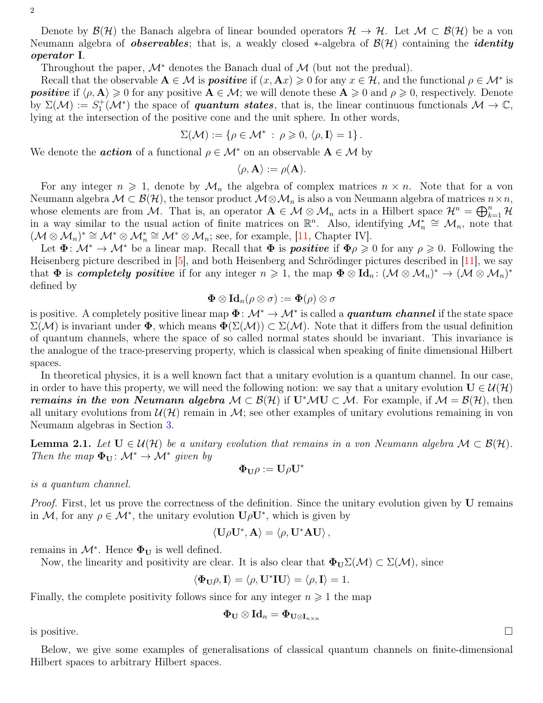
<figcaption class="paper-figure-caption"><b>Fig 1.</b> Low-resolution page preview, page 2</figcaption>
</figure>
<figure class="paper-figure-card">
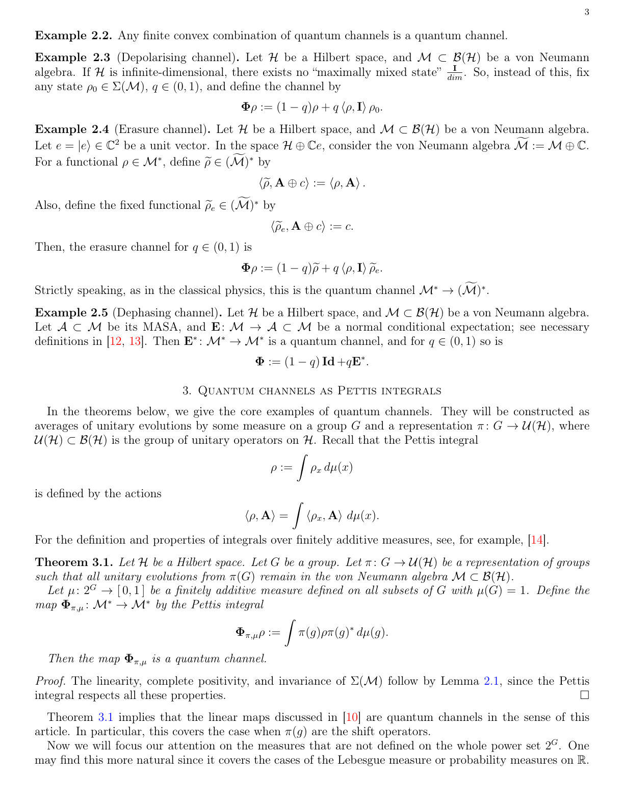
<figcaption class="paper-figure-caption"><b>Fig 2.</b> Low-resolution page preview, page 3</figcaption>
</figure>
<figure class="paper-figure-card">
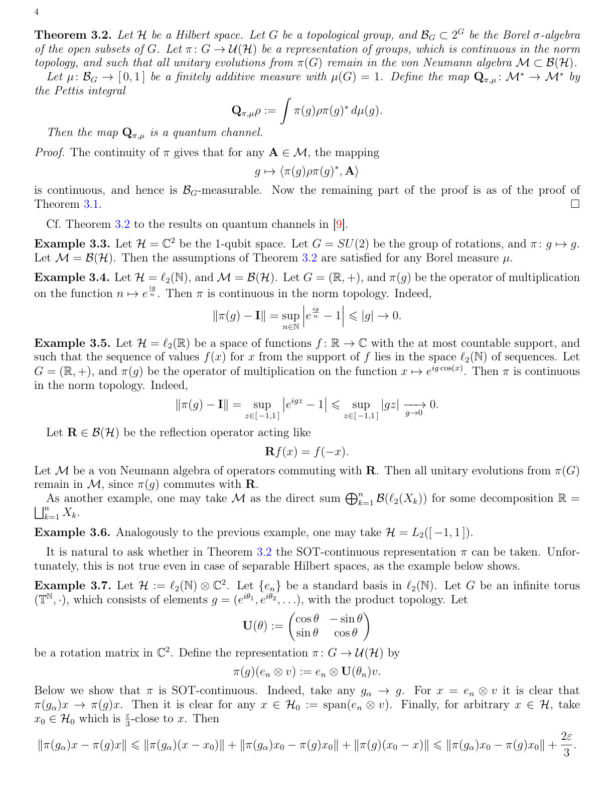
<figcaption class="paper-figure-caption"><b>Fig 3.</b> Low-resolution page preview, page 4</figcaption>
</figure>
<figure class="paper-figure-card">
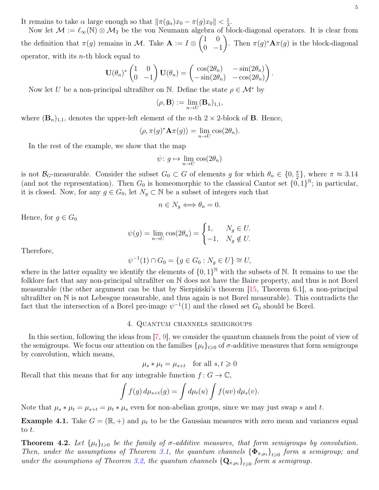
<figcaption class="paper-figure-caption"><b>Fig 4.</b> Low-resolution page preview, page 5</figcaption>
</figure>
<figure class="paper-figure-card">
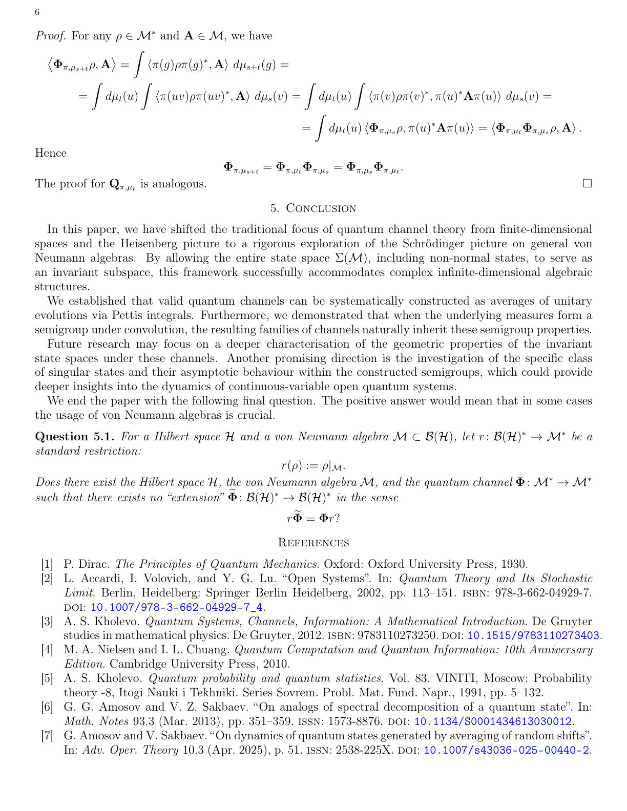
<figcaption class="paper-figure-caption"><b>Fig 5.</b> Low-resolution page preview, page 6</figcaption>
</figure>
</div>

<p><strong>Summary.</strong> This paper develops a general theory for quantum channels acting on the state spaces associated with von Neumann algebras in the Schrödinger picture. It achieves this by constructing these channels as Pettis integrals involving unitary representations over topological groups. This mathematical generalization allows the framework to handle complex, infinite-dimensional open quantum systems beyond traditional finite-dimensional models.</p>
<p><strong>Why it may be interesting.</strong> This work provides a rigorous mathematical framework for describing open quantum system dynamics in infinite dimensions by generalizing standard channel definitions to the dual space, which is crucial for modern theoretical treatments of continuous systems.</p>
<details>
<summary>Detailed structure</summary>
<p><strong>Main problem.</strong> The paper extends the study of quantum channels from finite-dimensional state spaces or the Heisenberg picture to the duals of general von Neumann algebras in the Schrödinger picture.</p>
<p><strong>Main result.</strong> Quantum channels can be systematically constructed as completely positive maps on $M^*$ via Pettis integrals involving representations of topological groups, and these constructions preserve semigroup properties under convolution semigroups of measures.</p>
<p><strong>Method.</strong> The core method involves defining quantum channels $\Phi: M^* 	o M^*$ using the integral form $\int_G \pi(g)
ho\pi(g)^* d\mu(g)$, which generalizes unitary averaging techniques to infinite dimensions.</p>
<p><strong>Model / system.</strong> The model concerns open quantum systems whose dynamics are described by completely positive maps (quantum channels) acting on the state space $\Sigma(M)$ associated with an infinite-dimensional von Neumann algebra $M \subset B(H)$.</p>
<p><strong>Key observables.</strong> Quantum states $
ho \in \Sigma(M)$, observables $A \in M$, and the action of the channel $\Phi$ on these elements.</p>
<p><strong>Important parameters / regimes.</strong> The structure of the underlying topological group $G$ and the measure $\mu$ used in the Pettis integral construction are critical parameters.</p>
<p><strong>Assumptions / limitations.</strong> The primary assumption is that the dynamics can be modeled by averaging unitaries derived from representations $\pi: G 	o U(H)$; a key limitation noted is the potential failure of SOT-continuity for such representations.</p>
<p><strong>Paper structure.</strong> The paper builds upon known results for finite systems, introduces the general framework on $M^*$, proves that unitary evolution and Pettis integral constructions yield valid channels (Theorems 3.1 &amp; 3.2), and then explores semigroup properties using convolution semigroups of measures.</p>
</details>
<details>
<summary>Abstract</summary>
<p>The theory of quantum channels is traditionally studied either on finite-dimensional state spaces or within the Heisenberg picture as completely positive maps on C^*-algebras. In this paper, we consider quantum channels as completely positive maps on the duals of general von Neumann algebras in the Schrodinger picture. We investigate the construction of such channels through Pettis integrals using representations of topological groups.</p>
</details>
<p><sub><a href="#top">↑ back to top</a></sub></p>

<p><a id="paper-2608.16732"></a></p>
<h3 id="the-preferred-time-problem-in-the-conditional-interpretation-of-time"><a href="http://arxiv.org/abs/2608.16732v1">The preferred-time problem in the conditional interpretation of time</a></h3>
<p><strong>Authors:</strong> Ovidiu Cristinel Stoica<br>
<strong>Type:</strong> theory · <strong>Category:</strong> other · <strong>PDF:</strong> <a href="https://arxiv.org/pdf/2608.16732v1">https://arxiv.org/pdf/2608.16732v1</a><br>
<strong>Analysis basis:</strong> full PDF text, analyzed in chunks
<strong>Topic relevance:</strong> <code>quantum measurements</code> <strong>3/5</strong> · <code>driven-dissipative phase transition</code> <strong>2/5</strong> · <code>Keldysh / 2PI / non-Gaussian methods</code> <strong>1/5</strong> · <code>analog quantum simulation</code> <strong>1/5</strong> · <code>correlated / nonlocal dissipation</code> <strong>1/5</strong> · <code>methods for driven-dissipative</code> <strong>1/5</strong> · <code>scars &amp; prethermalization</code> <strong>1/5</strong></p>
<div class="figure-strip-hint">↔ Scroll figures horizontally</div>
<div class="paper-figures-scroll">
<figure class="paper-figure-card">
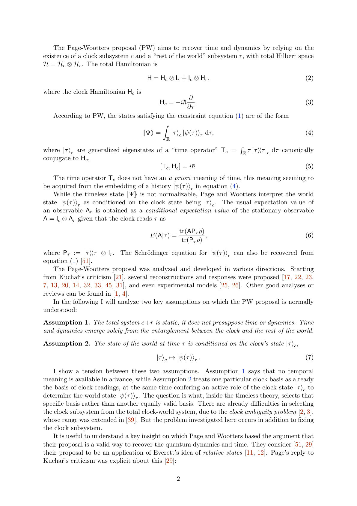
<figcaption class="paper-figure-caption"><b>Fig 1.</b> Low-resolution page preview, page 2</figcaption>
</figure>
<figure class="paper-figure-card">
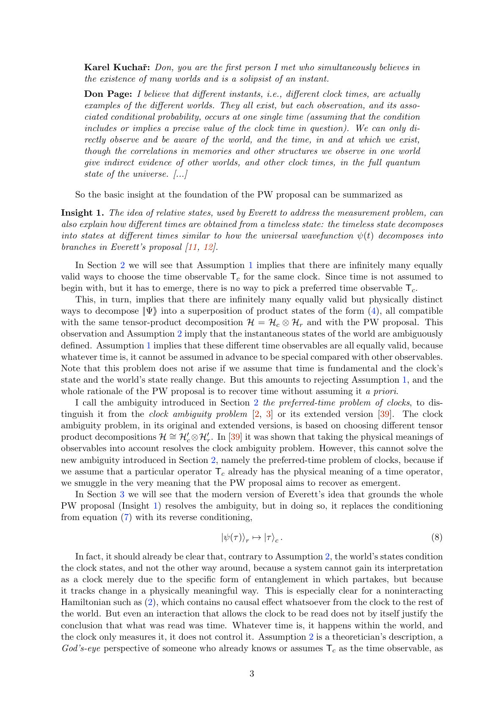
<figcaption class="paper-figure-caption"><b>Fig 2.</b> Low-resolution page preview, page 3</figcaption>
</figure>
<figure class="paper-figure-card">
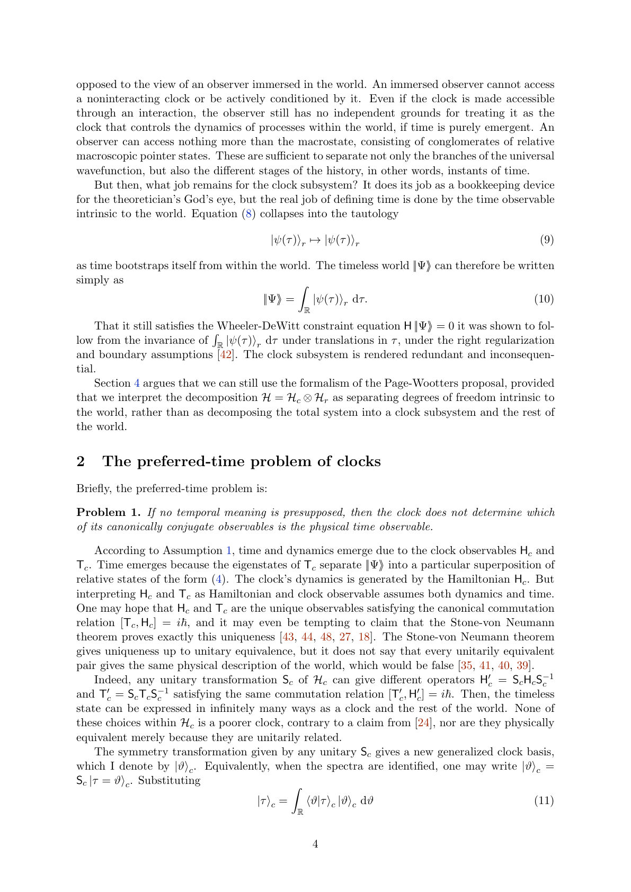
<figcaption class="paper-figure-caption"><b>Fig 3.</b> Low-resolution page preview, page 4</figcaption>
</figure>
<figure class="paper-figure-card">
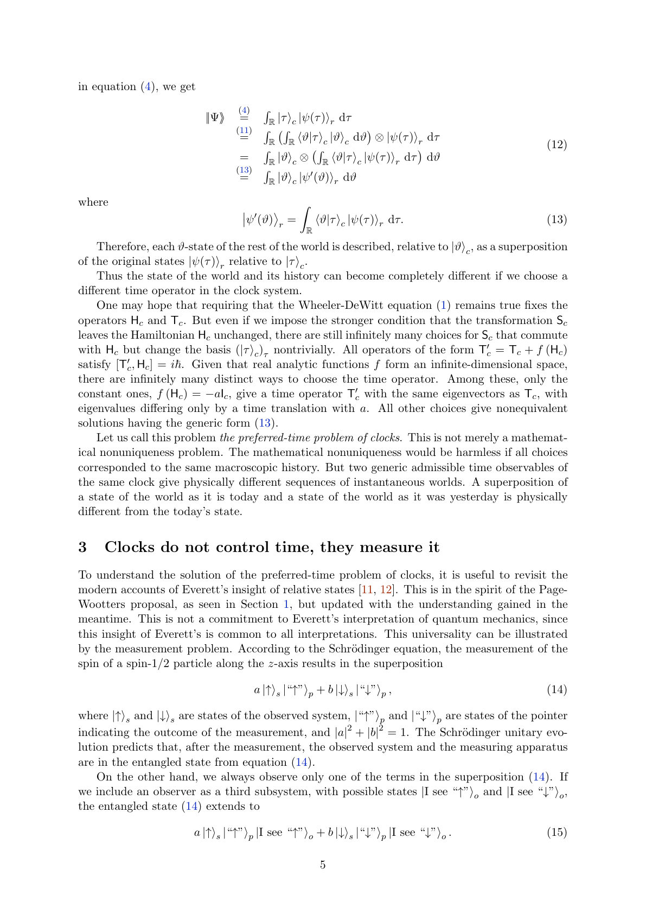
<figcaption class="paper-figure-caption"><b>Fig 4.</b> Low-resolution page preview, page 5</figcaption>
</figure>
<figure class="paper-figure-card">
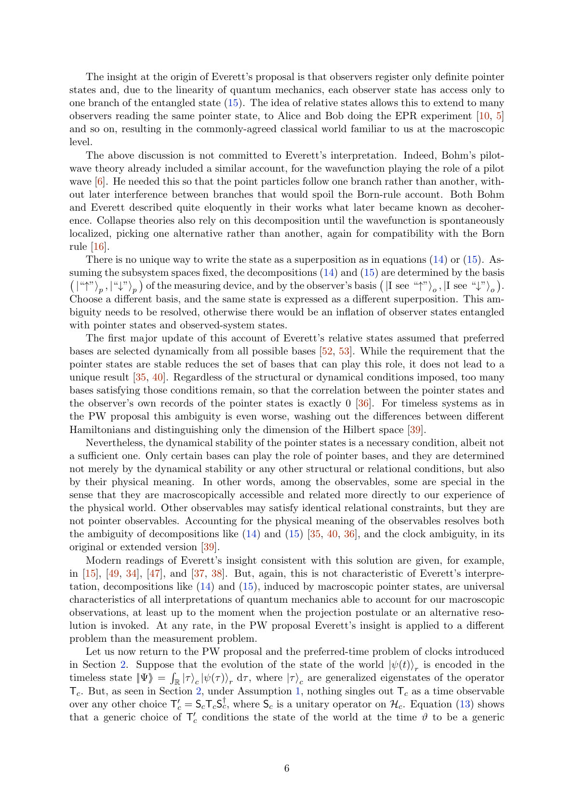
<figcaption class="paper-figure-caption"><b>Fig 5.</b> Low-resolution page preview, page 6</figcaption>
</figure>
</div>

<p><strong>Summary.</strong> This paper tackles the 'preferred-time problem' in timeless quantum formulations like the Page-Wootters proposal. It argues that assuming a separate clock system leads to ambiguity because infinitely many valid time operators exist for the entangled state. The resolution is that time must be defined intrinsically by the world's own observables, making the explicit separation of a 'clock' subsystem unnecessary.</p>
<p><strong>Why it may be interesting.</strong> Although focused on foundational quantum gravity/time, the concept of emergent dynamics from internal degrees of freedom is highly relevant to open quantum systems theory, particularly in defining effective Hamiltonians or decoherence mechanisms where time parameters are not externally imposed.</p>
<details>
<summary>Detailed structure</summary>
<p><strong>Main problem.</strong> The paper addresses the 'preferred-time problem' within the Page-Wootters (PW) formalism, which arises from the ambiguity in selecting a unique time operator when deriving dynamics from timeless quantum states.</p>
<p><strong>Main result.</strong> The correct interpretation requires that time emerges from intrinsic pointer observables of the world itself, rendering the explicit separation into a separate clock subsystem redundant for defining physical time evolution.</p>
<p><strong>Method.</strong> The analysis involves comparing mathematically valid decompositions of entangled states against physically necessary constraints, particularly by identifying which observable induces the temporal structure.</p>
<p><strong>Model / system.</strong> The model is quantum theory formulated in a timeless manner, using the PW proposal where the total system is treated as an entanglement between a clock subsystem ($c$) and the world subsystem ($r$).</p>
<p><strong>Key observables.</strong> Clock observable ($T_c$), global time observable ($\hat{b}T_r$), and the state decomposition $|\Psi
angle$.</p>
<p><strong>Important parameters / regimes.</strong> The structure of the Hamiltonian $H = H_c \otimes I_r + I_c \otimes H_r$ is central, as are the continuous vs. discrete nature of time spectra.</p>
<p><strong>Assumptions / limitations.</strong> The paper critiques two key assumptions of the standard PW interpretation: (1) that dynamics emerge solely from clock-world entanglement, and (2) that the world state is passively conditioned by a pre-selected clock basis.</p>
<p><strong>Paper structure.</strong> The structure moves from defining the problem (PW formalism leading to ambiguity) to analyzing the mathematical source of the ambiguity (infinite time operators) and finally proposing a resolution where intrinsic world observables dictate the temporal structure, thus invalidating the need for an external clock.</p>
</details>
<details>
<summary>Abstract</summary>
<p>In timeless formulations of quantum theory, the Page-Wootters proposal (PW) recovers time and dynamics as relative clock-and-world states. By interpreting the total timeless system as a clock entangled with the world, the states having a definite clock reading appear to recover the temporal states of the world as relative states, and dynamics emerges. But an entangled state admits infinitely many decompositions as a superposition of product states, each decomposition corresponding to a different but equally valid time operator of the same clock system. Different valid choices of the time operator for the same clock system lead to different physical histories, where the world states in a history are superpositions of the world states from another history. Fixing one operator as "the" clock time would import the temporal meaning that the Page-Wootters proposal is meant to explain in the first place. Therefore, the interpretation of PW that the world state is passively conditioned on the clock state cannot hold. The timeless state is resolved into time-dependent states by the intrinsic pointer observables of the world, without having to outsource the role of the time operator to a separate clock. Fortunately, the formalism of PW remains valid, provided that it is interpreted in terms of intrinsic pointer observables of the world itself.</p>
</details>
<p><sub><a href="#top">↑ back to top</a></sub></p>

<p><a id="paper-2608.16623"></a></p>
<h3 id="carnot-meets-quantum-information-thermal-machine-driven-by-probabilistic-non-orthogonal-state-discrimination"><a href="http://arxiv.org/abs/2608.16623v1">Carnot Meets Quantum Information: Thermal Machine Driven by Probabilistic Non-orthogonal State Discrimination</a></h3>
<p><strong>Authors:</strong> Tan-Ji Zhou, Yun-Qian Lin, Yu-Han Ma, C. P. Sun<br>
<strong>Type:</strong> theory · <strong>Category:</strong> statistical mechanics · <strong>PDF:</strong> <a href="https://arxiv.org/pdf/2608.16623v1">https://arxiv.org/pdf/2608.16623v1</a><br>
<strong>Analysis basis:</strong> full PDF text, analyzed in chunks
<strong>Topic relevance:</strong> <code>driven-dissipative phase transition</code> <strong>3/5</strong> · <code>non-equilibrium universality</code> <strong>2/5</strong> · <code>Keldysh / 2PI / non-Gaussian methods</code> <strong>1/5</strong> · <code>correlated / nonlocal dissipation</code> <strong>1/5</strong> · <code>methods for driven-dissipative</code> <strong>1/5</strong> · <code>quantum measurements</code> <strong>1/5</strong></p>
<div class="figure-strip-hint">↔ Scroll figures horizontally</div>
<div class="paper-figures-scroll">
<figure class="paper-figure-card">
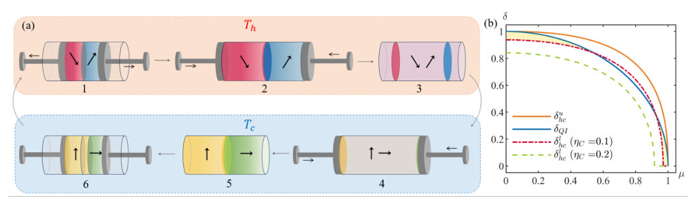
<figcaption class="paper-figure-caption"><b>Fig 1.</b> FIG. 1. (a) Schematic of the quantum information thermodynamic cycle. The cycle comprises isothermal expansion (hot reservoir, steps 1-3) and isothermal compression (cold reservoir, steps 4-6), driven by probabilistic non-orthogonal state discrimination. Red/blue regions denote gas in non-orthogonal states |𝜓1⟩(↘) and |𝜓2⟩(↗); yellow/green regions denote orthogonal states |𝜙1⟩(↑) and |𝜙2⟩(→). (b) Parameter space for positive work extraction. Discrimination accuracy 𝛿is plotted against state overlap 𝜇. Functional operation requires 𝛿to fall between the quantum information limit 𝛿𝑄𝐼(solid blue curve) and the thermodynamic lower bound 𝛿𝑙 ℎ𝑐(dashed curves). The shaded yellow area highlights the...</figcaption>
</figure>
<figure class="paper-figure-card">
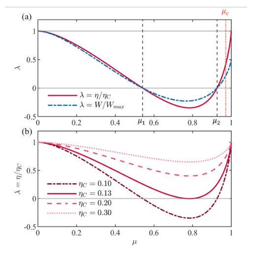
<figcaption class="paper-figure-caption"><b>Fig 2.</b> FIG. 2. Performance characteristics of the machine evaluated at 𝛿= 𝛿𝑄𝐼. (a) The normalized net work output and efficiency are plotted as functions of 𝜇for 𝜂𝐶= 0.1. (b) Normalized efficiency as a function of 𝜇with different 𝜂𝐶.</figcaption>
</figure>
<figure class="paper-figure-card">
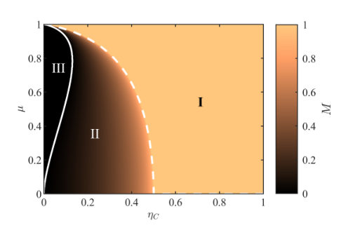
<figcaption class="paper-figure-caption"><b>Fig 3.</b> FIG. 3. Functional phase diagram of the quantum information ma- chine in the parameter space of Carnot efficiency 𝜂𝐶versus state overlap 𝜇. The color map indicates the normalized order parameter 𝑀. The diagram features three distinct regimes: I. the Pure Heat Engine Phase (𝑀= 1), II. the Mixed Phase (0 &lt; 𝑀&lt; 1), and III. the Dissipative Phase (𝑀= 0). The dashed white line denotes the analytical boundary 𝜇𝑐given by Eq. (13).</figcaption>
</figure>
</div>

<p><strong>Summary.</strong> This work analyzes a theoretical thermal machine powered by the probabilistic discrimination of non-orthogonal quantum states. It maps out the operational boundaries in the parameter space defined by the Carnot efficiency and state overlap, revealing distinct phase transitions. The findings establish how quantum information constraints fundamentally limit the maximum extractable work from heat gradients.</p>
<p><strong>Why it may be interesting.</strong> It provides a rigorous framework connecting non-equilibrium thermodynamics (heat engines) directly with fundamental principles of quantum information theory (state distinguishability), which is highly relevant for understanding energy extraction in quantum devices.</p>
<details>
<summary>Detailed structure</summary>
<p><strong>Main problem.</strong> The paper investigates the fundamental limits on energy conversion when a thermal machine utilizes probabilistic discrimination of non-orthogonal quantum states.</p>
<p><strong>Main result.</strong> The system exhibits phase-transition-like switching in its performance region within the Carnot efficiency ($\eta_C$) and state overlap ($\mu$) plane, revealing anomalous reentrant transitions under weak driving.</p>
<p><strong>Method.</strong> The analysis uses a six-step thermodynamic cycle model to derive efficiencies by jointly considering quantum information bounds (Holevo-Helstrom) and classical thermodynamics constraints.</p>
<p><strong>Model / system.</strong> A two-reservoir quantum machine modeled using an ideal gas with internal quantum degrees of freedom, operating between hot ($T_h$) and cold ($T_c$) reservoirs.</p>
<p><strong>Key observables.</strong> Efficiency ($\eta$), Net Work ($W_{net}$), State Overlap ($\mu$), Discrimination Accuracy ($\delta$).</p>
<p><strong>Important parameters / regimes.</strong> Carnot Efficiency ($\eta_C = 1 - T_c/T_h$); critical thresholds like $\eta_C \ge 0.5$ and $\eta_C \lesssim 0.13$.</p>
<p><strong>Assumptions / limitations.</strong> The analysis assumes reversible operation for the joint measurement-resetting process.</p>
<p><strong>Figures summary.</strong> Figure 1(b) plots the required operational region for discrimination accuracy ($\delta$) between the thermodynamic lower bound ($\delta_{lhc}$) and the quantum indistinguishability limit ($\delta_{QI}$). Figure 3 maps a phase diagram showing three distinct operating phases in the $(\eta_C, \mu)$ space.</p>
<p><strong>Paper structure.</strong> The paper establishes the physical model, derives efficiency formulas incorporating entropy terms, determines the operational constraints by comparing quantum and thermodynamic bounds, and finally maps out the resulting phase diagram to characterize functional switching.</p>
</details>
<details>
<summary>Abstract</summary>
<p>While the impossibility of perfectly identifying non-orthogonal states is a cornerstone of quantum information science, their probabilistic discrimination is nonetheless permissible. Here, we propose a two-reservoir quantum machine driven by this mechanism to map its functional boundaries across the parameter space of the state overlap $μ$ and the Carnot efficiency $η_C$. Within this $η_C$-$μ$ plane, the machine exhibits phase-transition-like functional switching among a pure heat-engine phase, a mixed phase, and a dissipative phase. We identify critical thresholds governing these transitions: strong thermal driving ($η_C \ge 0.5$) unconditionally guarantees positive work extraction, whereas weak driving ($η_C \lesssim 0.13$) induces an anomalous reentrant transition, where increasing $μ$ unexpectedly restores engine functionality after a purely dissipative regime. Our results explicitly demonstrate how quantum mechanics and thermodynamics jointly constrain information-to-energy conversion.</p>
</details>
<p><sub><a href="#top">↑ back to top</a></sub></p>

<p><a id="paper-2608.16451"></a></p>
<h3 id="jump-diffusion-stochastic-quantization-for-euclidean-lattice-field-theories"><a href="http://arxiv.org/abs/2608.16451v1">Jump-Diffusion Stochastic Quantization for Euclidean Lattice Field Theories</a></h3>
<p><strong>Authors:</strong> Alexander Rothkopf<br>
<strong>Type:</strong> theory · <strong>Category:</strong> numerical methods · <strong>PDF:</strong> <a href="https://arxiv.org/pdf/2608.16451v1">https://arxiv.org/pdf/2608.16451v1</a><br>
<strong>Analysis basis:</strong> full PDF text, analyzed in chunks
<strong>Topic relevance:</strong> <code>methods for driven-dissipative</code> <strong>3/5</strong> · <code>driven-dissipative phase transition</code> <strong>2/5</strong> · <code>Keldysh / 2PI / non-Gaussian methods</code> <strong>1/5</strong> · <code>analog quantum simulation</code> <strong>1/5</strong> · <code>correlated / nonlocal dissipation</code> <strong>1/5</strong> · <code>quantum measurements</code> <strong>1/5</strong></p>
<div class="figure-strip-hint">↔ Scroll figures horizontally</div>
<div class="paper-figures-scroll">
<figure class="paper-figure-card">
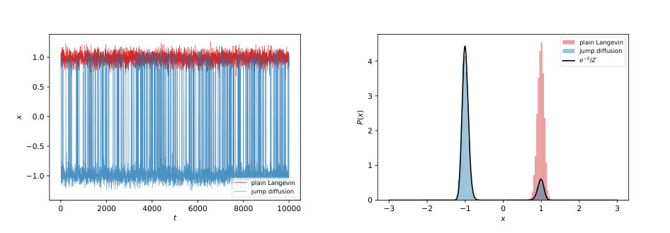
<figcaption class="paper-figure-caption"><b>Fig 1.</b> FIG. 1. (left) Individual trajectory of the stochastic process sampling the tilted double well using diffusion Langevin (red) or our novel jump-diffusion approach (blue), both initialized at x = 1. Note the frequent visits of the opposite local minima by the latter. (right) Histogram of the sampled degree of freedom for diffusive langevin (red) and the ergodical sampling by jump-diffusion (blue)</figcaption>
</figure>
<figure class="paper-figure-card">
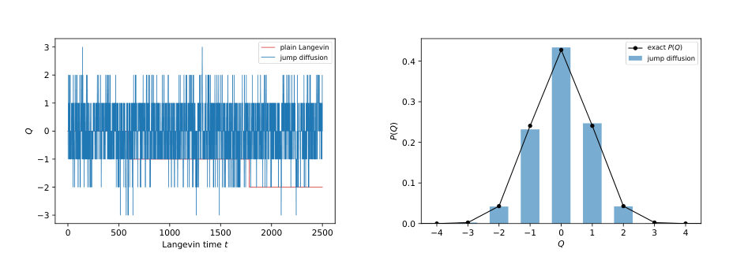
<figcaption class="paper-figure-caption"><b>Fig 2.</b> FIG. 2. Visualizations at β = 8, L = 16: (left) topological charge and its transitions from plain Langevin (red solid) and the jump-diffusion update (blue). (right) Histogram of the topological charge as sampled with jump-diffusion (blue bars) compared to the exact result from the literature.</figcaption>
</figure>
<figure class="paper-figure-card">
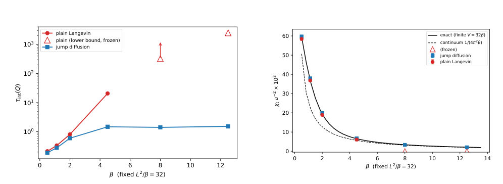
<figcaption class="paper-figure-caption"><b>Fig 3.</b> FIG. 3. (left) Topological charge autocorrelation time at various lattice couplings β, as measured for plain Langevin updates (red data) and the jump-diffusion updates (blue data). Where fewer than 20 transitions occur the estimate of autocorrelation time becomes unreliable we give its value as lower bound (open triangles). (right) The values of the topological susceptibility estimated at various β values from plain Langevin (red) and the jump-diffusion sampler (blue). The exact lattice result is given as black solid line, the continuum expression as dashed black line.</figcaption>
</figure>
<figure class="paper-figure-card">
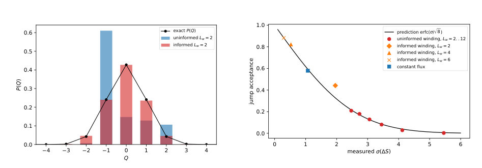
<figcaption class="paper-figure-caption"><b>Fig 4.</b> FIG. 4. (left) Histogram of topological charge sampled at β = 8, L = 16 with small Lw = 2 uninformed (A) winding jumps (blue bars) and using state informed (C) jumps (red bars). The exact result is given as black solid line. (right) Jump acceptance vs. the standard deviation of the relevant action cost. Following section II D ∆S is used for uninformed jumps and ∆Seff for informed jumps. The uninformed global constant flux update (blue data) shows higher acceptance than the local uninformed winding updates (red data). The smaller the extent Lw, the lower the acceptance. On the other hand, informed winding updates, even for small Lw = 2 (orange square) exceed the acceptance efficiency for the...</figcaption>
</figure>
</div>

<p><strong>Summary.</strong> This paper extends stochastic quantization by incorporating jump-diffusion processes, allowing simulations to overcome topological barriers that trap standard diffusion methods. By developing rigorous mathematical constructions for the jump probabilities, the authors demonstrate a powerful tool to efficiently sample complex action landscapes in lattice field theories.</p>
<p><strong>Why it may be interesting.</strong> The rigorous mathematical development of ensuring detailed balance for non-local jumps is highly relevant to any simulation technique relying on Markov chain Monte Carlo (MCMC), including those used in quantum field theory or complex many-body systems where barriers are present.</p>
<details>
<summary>Detailed structure</summary>
<p><strong>Main problem.</strong> To construct a natural generalization of stochastic quantization by incorporating jump-diffusion processes to efficiently explore action landscapes with barriers.</p>
<p><strong>Main result.</strong> The framework successfully generalizes stochastic quantization by providing concrete, detailed balance preserving methods (additive proposals, invertible maps) for designing the necessary jump probabilities.</p>
<p><strong>Method.</strong> The authors derive and apply a generalized master equation for Poisson jump-diffusion processes, ensuring convergence to the desired equilibrium distribution $P(\phi) \propto e^{-S(\phi)}$ via specific construction strategies for the jump kernel.</p>
<p><strong>Model / system.</strong> The theory is applied to Euclidean Lattice Field Theories, using 2D U(1) gauge theory as a benchmark problem to address topological freezing. The dynamics are governed by a generalized Fokker-Planck master equation incorporating both diffusion and non-continuous jumps.</p>
<p><strong>Key observables.</strong> Topological charge dynamics histogram, autocorrelation time reduction, and the acceptance rate of the jump process.</p>
<p><strong>Important parameters / regimes.</strong> The jump rate ($\lambda_0$), the size/extent of the update ($L_w$), and the parameters defining the proposal distributions (e.g., $\sigma$ for Gaussian approximations).</p>
<p><strong>Assumptions / limitations.</strong> Boundary terms are neglected in deriving the Fokker-Planck equation; certain constructions rely on assuming measure-preserving maps whose inverses are also available.</p>
<p><strong>Figures summary.</strong> Figure 4 compares topological charge dynamics histograms, showing that state-informed jumps (red bars) restore efficient transitions between topological sectors compared to uninformed updates (blue bars).</p>
<p><strong>Paper structure.</strong> The paper first introduces the need for jump-diffusion processes over standard diffusion. It then derives the generalized master equation and presents three construction strategies (A, B, C) to enforce detailed balance in the jump term. Finally, it applies this framework to lattice gauge theory simulations, demonstrating improved sampling efficiency.</p>
</details>
<details>
<summary>Abstract</summary>
<p>We construct the natural generalization of stochastic quantization (in the Markovian sense) by considering jump-diffusion processes. This class of stochastic processes exhibits non-continuous paths, so-called Lévy flights. In the presence of jumps, action landscapes with barriers can be efficiently explored, improving and even restoring ergodicity where traditional diffusion approaches become inefficient. We explore different strategies for constructing efficient jump updates, which we deploy to address the benchmark problem of topological freezing in 2d U(1) gauge theory.</p>
</details>
<p><sub><a href="#top">↑ back to top</a></sub></p>

<p><a id="paper-2608.15759"></a></p>
<h3 id="renormalization-group-analysis-of-pairing-instabilities-in-nuclear-fermi-liquids"><a href="http://arxiv.org/abs/2608.15759v1">Renormalization Group Analysis of Pairing Instabilities in Nuclear Fermi Liquids</a></h3>
<p><strong>Authors:</strong> Yang Xiao, Yixin Guo, Youngman Kim<br>
<strong>Type:</strong> theory · <strong>Category:</strong> quantum gases · <strong>PDF:</strong> <a href="https://arxiv.org/pdf/2608.15759v1">https://arxiv.org/pdf/2608.15759v1</a><br>
<strong>Analysis basis:</strong> full PDF text, analyzed in chunks
<strong>Topic relevance:</strong> <code>Keldysh / 2PI / non-Gaussian methods</code> <strong>3/5</strong> · <code>analog quantum simulation</code> <strong>3/5</strong> · <code>driven-dissipative phase transition</code> <strong>1/5</strong> · <code>methods for driven-dissipative</code> <strong>1/5</strong> · <code>non-equilibrium universality</code> <strong>1/5</strong></p>
<div class="figure-strip-hint">↔ Scroll figures horizontally</div>
<div class="paper-figures-scroll">
<figure class="paper-figure-card">
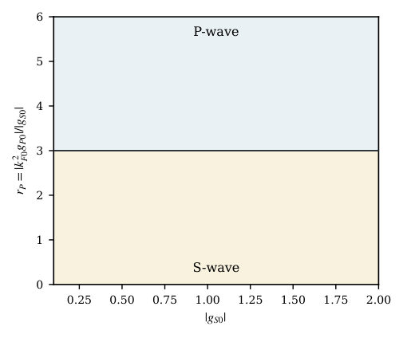
<figcaption class="paper-figure-caption"><b>Fig 1.</b> Figure 1: Spherical channel-selection diagram for the minimal S/P- wave model.</figcaption>
</figure>
<figure class="paper-figure-card">

<figcaption class="paper-figure-caption"><b>Fig 2.</b> Figure 1 summarizes the spherical benchmark by com- paring the formal pole scales of the S - and P-wave cou- plings. For each point in the (|gS 0|, rP) plane, we define</figcaption>
</figure>
<figure class="paper-figure-card">
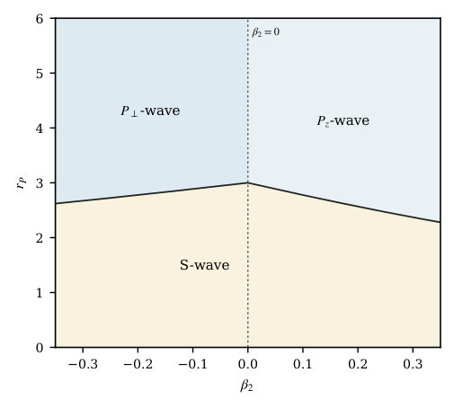
<figcaption class="paper-figure-caption"><b>Fig 3.</b> Figure 2: Schematic S/Pz/P⊥competition on an axially deformed Fermi surface, obtained from Eqs. (30)–(34). The plot uses kF0 = m = 1 and equal initial Pz and P⊥strengths.</figcaption>
</figure>
<figure class="paper-figure-card">
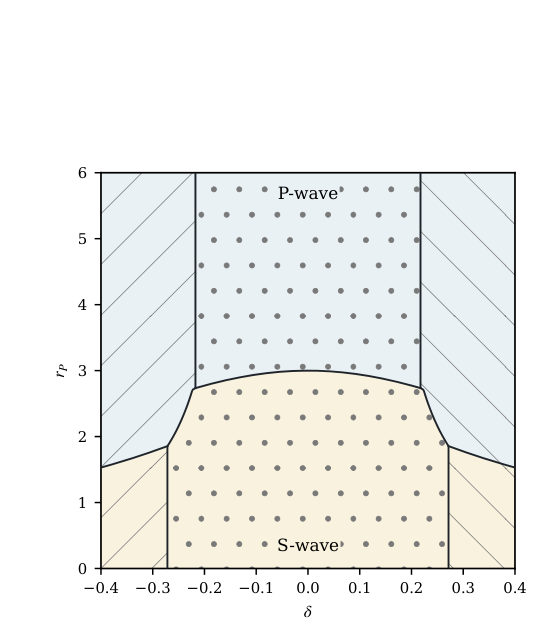
<figcaption class="paper-figure-caption"><b>Fig 4.</b> Figure 3: Dominant pairing channel in isospin-asymmetric matter as a function of the Fermi-momentum splitting δ. Pairing composition is distinguished by texture: dots denote np pairing, upward-sloping hatching (left-hand side) denotes pp pairing, and downward-sloping hatching (right-hand side) denotes nn pairing.</figcaption>
</figure>
</div>

<p><strong>Summary.</strong> This theoretical work uses Renormalization Group techniques to map out which pairing instability dominates in a nuclear Fermi liquid under varying conditions. By analyzing the pole scale of competing channels, it shows that both the geometry of the Fermi surface and the asymmetry between neutron and proton populations dictate the superconducting state formed.</p>
<p><strong>Why it may be interesting.</strong> While focused on nuclear physics, the methodology—using RG flow to determine the instability order among competing channels based on geometry and composition—is highly relevant to understanding phase transitions in strongly interacting quantum systems like ultracold Fermi gases (e.g., superfluidity onset).</p>
<details>
<summary>Detailed structure</summary>
<p><strong>Main problem.</strong> The study determines which competing pairing instability develops first in a nuclear Fermi liquid, considering various spin, isospin, and orbital channels.</p>
<p><strong>Main result.</strong> The dominant pairing channel is determined by the pole scale of the Renormalization Group (RG) flow; this selection depends critically on the Fermi surface geometry and the degree of neutron-proton asymmetry.</p>
<p><strong>Method.</strong> A Fermi-surface Renormalization Group (RG) treatment is employed, using one-loop corrections to determine the running couplings and the divergence scale ($\Lambda^*$) for different pairing channels.</p>
<p><strong>Model / system.</strong> The system modeled is a nuclear Fermi liquid, analyzed using a minimal S/P-wave interaction model. The analysis extends to include effects of axial deformation and neutron-proton momentum splitting.</p>
<p><strong>Key observables.</strong> Pole scale ($\Lambda^*_A$) of the RG flow; competition boundary parameter $r_P$; running coupling constants for different channels (nn, pp, np).</p>
<p><strong>Important parameters / regimes.</strong> Isospin asymmetry $\delta = (k_{F,n} - k_{F,p}) / k_{F0}$; deformation parameter $eta_2$; initial coupling strengths ($g_A(\Lambda_0)$).</p>
<p><strong>Assumptions / limitations.</strong> The calculations are controlled one-loop RG illustrations and not quantitative nuclear matter predictions; the analysis uses minimal S/P-wave truncations.</p>
<p><strong>Figures summary.</strong> Figure 1 shows the spherical channel selection diagram based on $r_P$. Figure 2 illustrates competition on an axially deformed surface. Figure 3 maps the dominant pairing channel in the $(\delta, r_P)$ plane for six components.</p>
<p><strong>Paper structure.</strong> The paper systematically analyzes the RG flow by first establishing the spherical benchmark (S vs P wave), then incorporating geometric effects via axial deformation ($eta_2$), and finally analyzing the impact of isospin asymmetry ($\delta$) which introduces finite threshold scales for $np$ pairing.</p>
</details>
<details>
<summary>Abstract</summary>
<p>A nuclear Fermi liquid exhibits competing pairing instabilities in different spin, isospin, and orbital channels. In a Fermi-surface renormalization group (RG) treatment, the channel that develops a pole first is determined not only by its tree-level attraction but also by its one-loop RG coefficient. We illustrate this mechanism in a minimal $S/P$-wave model. A spherical Fermi surface establishes the reference competition between the lowest even- and odd-parity interactions. Axial deformation changes the relevant Fermi-surface integrals and lifts the degeneracy between longitudinal and transverse $P$-wave components. In isospin-asymmetric matter, neutron--proton Fermi-momentum splitting restricts the simultaneous low-energy contribution of the two species and can terminate the $np$ running at finite threshold scales. Our calculations are intended as controlled one-loop RG illustrations rather than as quantitative nuclear-matter calculations. We show how the Fermi-surface geometry and composition can change the ordering of competing pairing instabilities.</p>
</details>
<p><sub><a href="#top">↑ back to top</a></sub></p>

<p><a id="paper-2608.16048"></a></p>
<h3 id="zendot-an-llm-integrated-quantum-tcad-platform-for-semiconductor-quantum-device-design-and-optimization-automation"><a href="http://arxiv.org/abs/2608.16048v1">zenDot: An LLM-integrated quantum TCAD platform for semiconductor quantum-device design and optimization automation</a></h3>
<p><strong>Authors:</strong> Zeheng Wang, Yan Liu, Yue Hao, Genquan Han<br>
<strong>Type:</strong> theory · <strong>Category:</strong> quantum information and computing · <strong>PDF:</strong> <a href="https://arxiv.org/pdf/2608.16048v1">https://arxiv.org/pdf/2608.16048v1</a><br>
<strong>Analysis basis:</strong> full PDF text, analyzed in chunks
<strong>Topic relevance:</strong> <code>Keldysh / 2PI / non-Gaussian methods</code> <strong>3/5</strong> · <code>methods for driven-dissipative</code> <strong>3/5</strong> · <code>quantum measurements</code> <strong>2/5</strong> · <code>driven-dissipative phase transition</code> <strong>1/5</strong></p>
<div class="figure-strip-hint">↔ Scroll figures horizontally</div>
<div class="paper-figures-scroll">
<figure class="paper-figure-card">
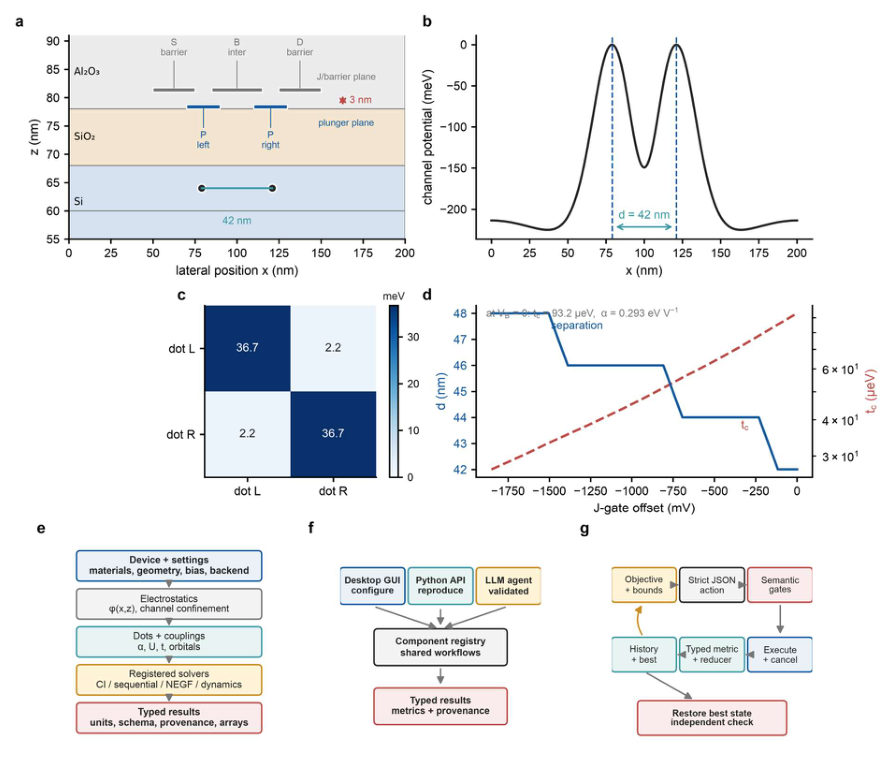
<figcaption class="paper-figure-caption"><b>Fig 1.</b> Fig. 1 | zenDot connects one device state to human and LLM-operated quantum-device simulation. a, Material-labelled Si/SiO₂ layer stack. b, Channel confinement returned by the electrostatic solution, resolving two minima 42 nm apart. c, Charging matrix derived from the same device state. d, Inter-dot gate control of separation and tunnel coupling. e, Device-to-result workflow shared across the platform. f, Desktop workbench, Python API, and LLM agent access the same component registry. g, Physics-aware LLM execution: proposed design actions are checked, executed by registered solvers, and returned as quantitative results for the next iteration.</figcaption>
</figure>
<figure class="paper-figure-card">
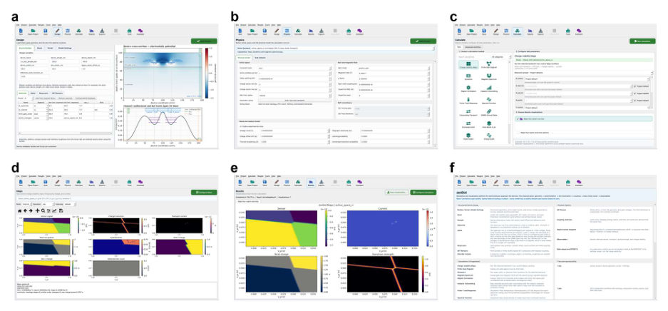
<figcaption class="paper-figure-caption"><b>Fig 2.</b> Fig. 2 | The zenDot desktop workbench. a, Device builder and derived confinement. b, Physical and solver settings. c, Registry- generated calculation components and compatible visualizations. d, Charge-stability and transport-map workspace. e, Result visualization and export. f, Integrated documentation. The same registered components are accessible through Python and the LLM Assistant.</figcaption>
</figure>
<figure class="paper-figure-card">
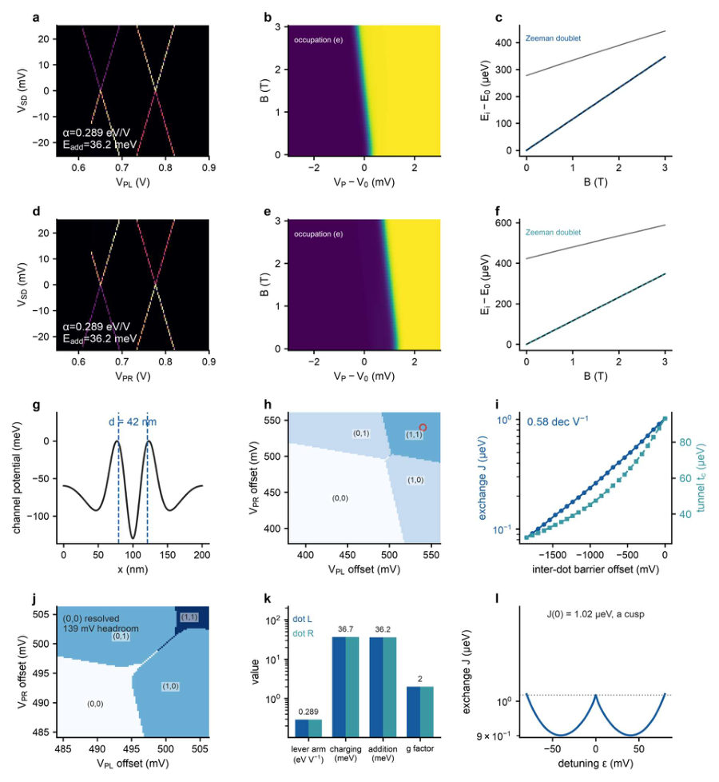
<figcaption class="paper-figure-caption"><b>Fig 3.</b> Fig. 3 | Device-level characterization generated from the reference Si/SiO₂ double dot. a-f, Coulomb diamonds, magnetospectroscopy, and Zeeman levels calculated independently for the left and right dots. g, Solved double-well confinement. h, Two-plunger charge-stability map with the selected (1,1) operating point. i, Barrier dependence of exchange and tunnel coupling. j, Empty-cell headroom below the first charging line. k, Left-right consistency of single-dot quantities. l, Even exchange J(ε) with a cusp-shaped local maximum at ε = 0.</figcaption>
</figure>
<figure class="paper-figure-card">
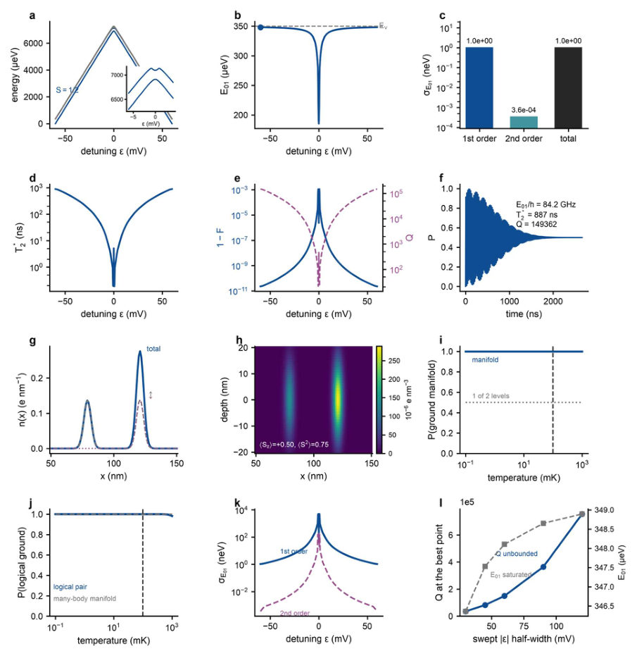
<figcaption class="paper-figure-caption"><b>Fig 4.</b> Fig. 4 | Hybrid-qubit demonstration on the calibrated device. a, Three-electron spectrum. b, Logical splitting E01 approaching the valley splitting. c-e, Noise response, dephasing time, infidelity, and quality factor. f, Dephased logical fringe. g,h, Real-space and depth-resolved density. i,j, Thermal populations and logical initialization. k, First- and second-order amplitude channels. l, Dependence of the reported quality factor on detuning window. At the reported operating point E01 = 348.1 µeV, the frequency is 84.2 GHz, T2* = 887.3 ns, and the logical initialization fidelity is 1.000 at 100 mK.</figcaption>
</figure>
<figure class="paper-figure-card">
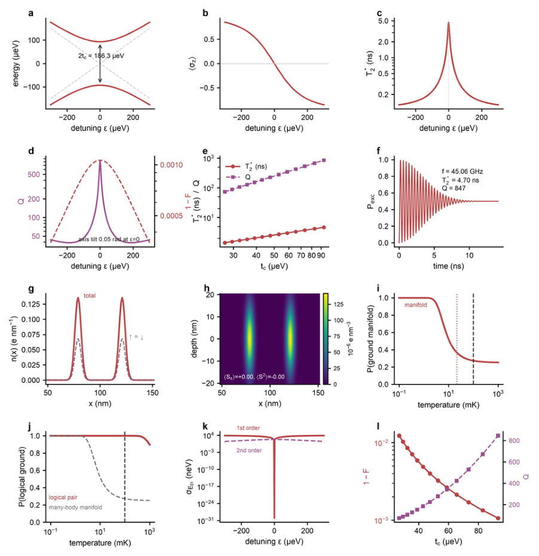
<figcaption class="paper-figure-caption"><b>Fig 5.</b> Fig. 5 | Tunnel-charge-qubit demonstration. a, Charge anticrossing with minimum splitting 2tc. b, Charge dipole. c,d, Dephasing and gate-error metrics across detuning. e, Dependence on tunnel coupling. f, Larmor fringe. g,h, Density. i,j, Many-body and logical thermal populations. k, First- and second-order amplitude channels. l, Barrier-controlled gate performance. At zero detuning, the frequency is 45.1 GHz, T2* = 4.70 ns, Q = 847 for a π/2 rotation, and the logical initialization fidelity is 1.000 at 100 mK.</figcaption>
</figure>
</div>

<p><strong>Summary.</strong> The paper presents zenDot, a novel LLM-integrated platform designed to automate the design and optimization of semiconductor quantum devices. It unifies disparate simulation tools—from electrostatics to correlated electron physics—into one cohesive workflow. By allowing an AI agent to propose changes and execute complex simulations iteratively, it drastically accelerates the discovery process for high-performance qubits.</p>
<p><strong>Why it may be interesting.</strong> This work directly addresses the computational bottleneck in quantum device engineering by embedding complex physics simulations within an AI-driven control loop, which is highly relevant for developing scalable quantum hardware designs.</p>
<details>
<summary>Detailed structure</summary>
<p><strong>Main problem.</strong> Semiconductor quantum-device design lacks an integrated TCAD environment connecting geometry, many-body simulation, and automated optimization.</p>
<p><strong>Main result.</strong> The zenDot platform successfully automates the characterization and optimization of various qubit types (e.g., singlet-triplet) on a double quantum dot, achieving significant performance improvements through LLM-driven iteration.</p>
<p><strong>Method.</strong> It introduces an LLM-integrated quantum TCAD workflow that unifies device state calculation across electrostatics, charge transport, and correlated-state physics solvers.</p>
<p><strong>Model / system.</strong> The system is a lateral Si/SiO2 double quantum dot. The platform models the device state using electrostatics ($
abla\cdot[\epsilon(\mathbf{r})
abla\phi(\mathbf{r})] = -
ho(\mathbf{r})$) and supports multiple qubit Hamiltonians (hybrid, tunnel-charge, singlet-triplet).</p>
<p><strong>Key observables.</strong> Gate infidelity, coherence time ($T_2^*$), Quality factor ($Q$), exchange energy ($J$), charge stability map, and device frequency ($  ext{GHz}$).</p>
<p><strong>Important parameters / regimes.</strong> Operating temperature (100 mK), noise amplitude ($1.5 \mu	ext{eV Hz}^{-1/2}$ at 1 Hz), and gate biases controlling tunnel coupling.</p>
<p><strong>Assumptions / limitations.</strong> The transport calculation uses the sequential-tunnelling approximation, and the LLM agent's actions are constrained to selecting and sequencing existing physics solvers.</p>
<p><strong>Figures summary.</strong> Figures illustrate the unified workflow from device state to various physical calculations (electrostatics, charge maps) and demonstrate the closed-loop operation of the LLM agent guiding optimization sweeps for different qubit types.</p>
<p><strong>Paper structure.</strong> The paper establishes the need for integration, introduces zenDot as the solution, details its components (electrostatics, solvers), demonstrates its capability on a Si/SiO2 double dot across multiple qubit models, and concludes by showing the LLM agent performing iterative design optimization.</p>
</details>
<details>
<summary>Abstract</summary>
<p>Semiconductor quantum-device design still lacks an integrated Technology Computer-Aided Design (TCAD)-like environment that connects material geometry, quantum many-body simulation, and automated design. Here we introduce zenDot, a large-language model (LLM)-integrated quantum TCAD platform that links a material-labelled device state to a unified condensed-matter physics toolbox. The device and calculation components are integrated into a desktop workbench, Python API, and an embedded LLM agent, allowing electrostatics, charge and transport characterization, correlated-state calculations, and qubit modelling to be executed within one reproducible environment. We demonstrate zenDot on a Si/SiO2 double quantum dot, where a single device state reproduces the characterization workflow and supports hybrid, tunnel-charge, and singlet-triplet qubit analyses. A platform-level universal-control scan revises the singlet-triplet operating point and reduces the predicted worst-gate infidelity by nearly 30-fold. Beyond analysis, the LLM agent directly operates the same physics environment as human users, proposing design changes, executing registered simulations, and iterating on solver-returned metrics under physics-aware validation. Across three demonstration tasks it completes 18 validated design iterations, including geometry modification followed by a full re-solve from the material stack. zenDot establishes a machine-operable quantum TCAD workflow that connects device physics with LLM-driven design exploration.</p>
</details>
<p><sub><a href="#top">↑ back to top</a></sub></p>

<p><a id="paper-2608.16436"></a></p>
<h3 id="dynamical-spectral-functions-from-bitstring-sampled-quantum-subspaces-entanglement-not-one-body-magic-tracks-the-sampling-cost"><a href="http://arxiv.org/abs/2608.16436v1">Dynamical spectral functions from bitstring-sampled quantum subspaces: entanglement, not one-body magic, tracks the sampling cost</a></h3>
<p><strong>Authors:</strong> Nicolás Bonilla Vargas<br>
<strong>Type:</strong> both · <strong>Category:</strong> strongly correlated electrons · <strong>PDF:</strong> <a href="https://arxiv.org/pdf/2608.16436v1">https://arxiv.org/pdf/2608.16436v1</a><br>
<strong>Analysis basis:</strong> full PDF text, analyzed in chunks
<strong>Topic relevance:</strong> <code>analog quantum simulation</code> <strong>3/5</strong> · <code>methods for driven-dissipative</code> <strong>3/5</strong> · <code>Keldysh / 2PI / non-Gaussian methods</code> <strong>1/5</strong> · <code>quantum measurements</code> <strong>1/5</strong></p>
<div class="figure-strip-hint">↔ Scroll figures horizontally</div>
<div class="paper-figures-scroll">
<figure class="paper-figure-card">
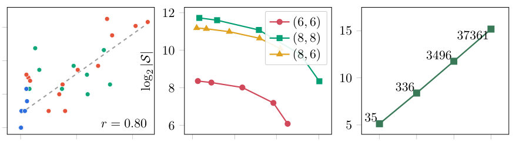
<figcaption class="paper-figure-caption"><b>Fig 1.</b> Figure 1. One-body magic F1 is decoupled from the sample-based determinant support |S|. (a) Nineteen FCI-verified molecules at equilibrium and dissociation: in the static-correlation regime F1 and |S| rise together (Pearson r = 0.80 on log2 |S|), yet F1 approaches its maximum while |S| stays a modest fraction of the active-space sector. (b) Hubbard chains at fixed filling (three representative sweeps; the full 30-point set is Fig. 2): increasing on-site repulsion U raises F1 but lowers the site-basis support |S| as the ground state localizes, inverting the sign of the correlation. (c) Free fermions (U = 0): a single Slater determinant with F1 = 0, whose site-basis support nonetheless grows...</figcaption>
</figure>
<figure class="paper-figure-card">
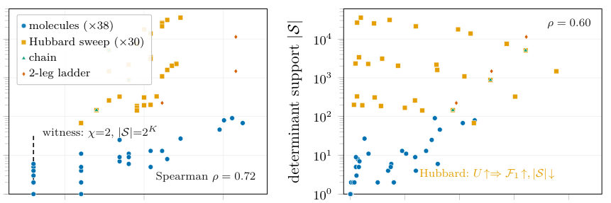
<figcaption class="paper-figure-caption"><b>Fig 2.</b> Figure 2. The resource thesis over 74 exact ground states. Nineteen molecules at equilibrium and dissociation, a Hubbard interaction sweep, and a matched chain/two-leg-ladder pair (all exact diagonalization). (a) The determinant support |S| tracks the minimal bond dimension χ in every family (pooled Spearman ρ = 0.72; the geminal witness χ=2, |S|=2K is the deliberately loose lower bound). (b) One-body magic F1 does not (pooled Spearman ρ = 0.60 for F1 vs |S| over the same 74 states): the Hubbard branch runs the wrong way (U ↑⇒F1 ↑, |S|↓) and the chain/ladder points share the same F1 at |S| differing by up to ∼2.2×. Cost is lower-bounded and tracked by the basis-dependent χ, not by the...</figcaption>
</figure>
<figure class="paper-figure-card">
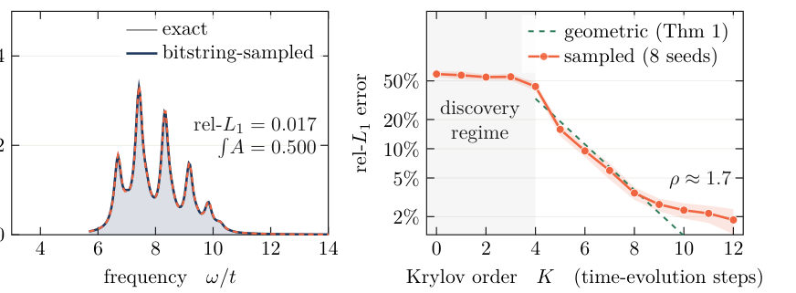
<figcaption class="paper-figure-caption"><b>Fig 3.</b> Figure 3. The method, validated—and its convergence matches the theorem. (a) The bitstring- sampled single-particle spectral function reproduces the exact A(ω) (Hubbard L = 6, U/t = 8; broadening η = 0.15 t) to relative-L1 0.017—the exact (filled) and reconstructed (dashed) curves are indistinguishable— and the reconstructed spectral weights obey the exact addition-branch sum rule R A+ dω = 0.500 = 1 −⟨np⟩ to machine precision (the panel shows the addition branch ω &gt; 0; the full A integrates to 1). (b) Convergence of the relative-L1 error with the Krylov order K (number of time-evolution steps sampled), seed-averaged over eight independent runs (band = standard deviation). Two regimes...</figcaption>
</figure>
<figure class="paper-figure-card">
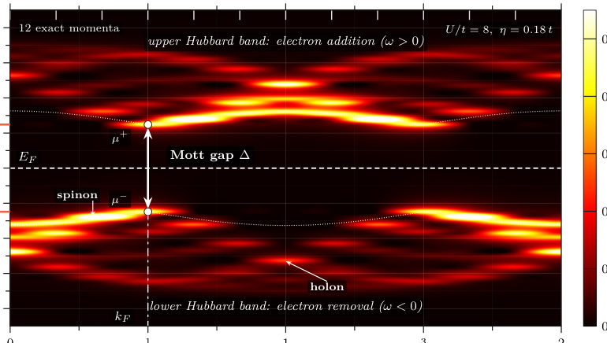
<figcaption class="paper-figure-caption"><b>Fig 4.</b> Figure 4. Momentum-resolved spectral function: the exact dynamical target. The single-particle spectral function A(k, ω) of the half-filled Hubbard chain (U/t = 8, L = 12, Lorentzian broadening η = 0.18 t), computed exactly from the resolvent ⟨ϕ|(z −ˆH)−1|ϕ⟩via the Haydock continued fraction [54] over the full (N±1) sectors (equivalent to the Lehmann sum in exact arithmetic)—the frequency- and momentum-resolved observable that sample-based diagonalization targets but its energy-only output cannot itself deliver. The two dispersing Hubbard bands—electron removal (lower, ω &lt; 0; photoemission) and electron addition (upper, ω &gt; 0; inverse photoemission)—are separated by the correlation-driven...</figcaption>
</figure>
<figure class="paper-figure-card">
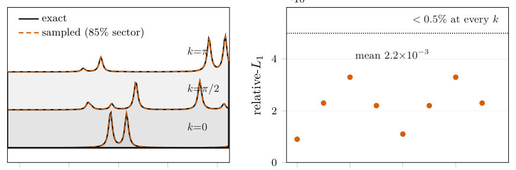
<figcaption class="paper-figure-caption"><b>Fig 5.</b> Figure 5. The momentum-resolved spectral function reconstructed from bitstring-sampled subspaces, overlaid on the exact target. (a) Bitstring-sampled A(k, ω) (dashed) versus the exact Haydock result (solid, shaded) at three representative momenta (k = 0, π/2, π; Hubbard chain, L = 8, U/t = 8, η = 0.18 t; curves offset vertically by k), reconstructed by time-evolution configuration sampling in the (N±1) sectors and the classical Lehmann assembly of Eq. (2)—not the exact target of Fig. 4, but the sampled output. (b) Relative-L1 error of the sampled reconstruction at every physical momentum, at a subspace of 85% of the (N±1) sector: below 0.5% throughout (mean 2.2 × 10−3). The reconstruction...</figcaption>
</figure>
</div>

<p><strong>Summary.</strong> This work develops a method to calculate dynamic properties, such as spectral functions, in strongly correlated electron systems using limited quantum resources. By sampling subspaces via simple measurements, the authors show that the computational cost is dictated by entanglement structure ($\chi$), not by easily measurable one-body quantities. This advances the field by providing a resource-aware roadmap for simulating complex electronic dynamics on current hardware.</p>
<p><strong>Why it may be interesting.</strong> It provides a concrete pathway for simulating complex many-body dynamics (like spectral functions) on near-term quantum hardware by identifying the true scaling bottleneck (entanglement) rather than relying on simplified local observables.</p>
<details>
<summary>Detailed structure</summary>
<p><strong>Main problem.</strong> To extend quantum subspace diagonalization from static ground-state energies to continuous, frequency-resolved dynamics for electronic structure calculations.</p>
<p><strong>Main result.</strong> The sampling cost is governed by the entanglement (minimal bond dimension $\chi$), not by one-body invariants like Fermionic AntiFlatness ($F_1$).</p>
<p><strong>Method.</strong> Reconstruct spectral functions and dynamical structure factors classically from sampled subspaces using only computational-basis measurements on a quantum processor.</p>
<p><strong>Model / system.</strong> The methods are applied to electronic structure problems, validated against Hubbard chains and molecular systems, focusing on charged and neutral sectors of many-electron Hamiltonians.</p>
<p><strong>Key observables.</strong> Single-particle spectral functions $A(\omega)$, momentum-resolved $A(k, \omega)$, and dynamical structure factors $S(q, \omega)$.</p>
<p><strong>Important parameters / regimes.</strong> The resource cost is tracked by the determinant support size $|\mathcal{S}|$ and lower-bounded by entanglement ($\chi$).</p>
<p><strong>Assumptions / limitations.</strong> The method assumes moment exactness can be achieved with a sampling bound polynomial in $|\mathcal{S}|$, independent of Hilbert-space dimension.</p>
<p><strong>Paper structure.</strong> The paper introduces the methodology by moving the target from ground state to dynamics, details the reconstruction process using shallow measurements, and then analyzes the resource cost, contrasting one-body diagnostics with entanglement measures.</p>
</details>
<details>
<summary>Abstract</summary>
<p>Sample-based quantum diagonalization (SQD) and quantum-selected configuration interaction (QSCI) are the electronic-structure methods with most hardware traction, yet their canonical target -- the ground-state energy -- is where classical methods have caught up. We move the target to dynamics and the resource question. From one bitstring-sampling primitive -- computational-basis measurements of a shallow real-time circuit, with no Hadamard or controlled unitaries -- we reconstruct, from sampled subspaces, the single-particle spectral functions $A(ω)$ and $A(k,ω)$ and the neutral-sector dynamical structure factors $S(q,ω)$ and $S^{zz}(q,ω)$, each built classically in the Lehmann representation from its own subspace. The reconstruction matches exact diagonalization on Hubbard chains and, for $A(ω)$, across nineteen molecules (FCI-verified to $<10^{-5}$ Ha), and runs on the IBM Heron processor. Second, we ask which resource controls the cost -- the determinant support $|\mathcal{S}|$ the sampler must populate. On number-conserving states the fermionic AntiFlatness collapses to one 1-RDM invariant, $\mathcal{F}_1 = 4\,\mathrm{tr}[γ(1-γ)] = 2N_u$. An orbital-rotation (Gaussian) invariant while $|\mathcal{S}|$ is basis dependent, $\mathcal{F}_1$ is provably decoupled from the cost; the cost is instead lower-bounded and tracked by the entanglement -- the minimal bond dimension $χ$ (Spearman $ρ= 0.90$). One-body magic is thus a faithful multireference diagnostic but an unreliable cost predictor; any genuine advantage lives in the non-Gaussianity of the higher-body cumulants. We prove moment exactness and a sampling bound polynomial in $|\mathcal{S}|$, independent of Hilbert-space dimension. Self-consistent configuration recovery improves the subspace under device noise, while a learned generative model does not beat that classical baseline.</p>
</details>
<p><sub><a href="#top">↑ back to top</a></sub></p>

<p><a id="paper-2608.15800"></a></p>
<h3 id="linear-response-functions-from-inhomogeneous-dynamical-mean-field-theory"><a href="http://arxiv.org/abs/2608.15800v1">Linear response functions from inhomogeneous dynamical mean-field theory</a></h3>
<p><strong>Authors:</strong> Don Rolih, Fabian B. Kugler<br>
<strong>Type:</strong> theory · <strong>Category:</strong> strongly correlated electrons · <strong>PDF:</strong> <a href="https://arxiv.org/pdf/2608.15800v1">https://arxiv.org/pdf/2608.15800v1</a><br>
<strong>Analysis basis:</strong> full PDF text, analyzed in chunks
<strong>Topic relevance:</strong> <code>Keldysh / 2PI / non-Gaussian methods</code> <strong>3/5</strong> · <code>analog quantum simulation</code> <strong>2/5</strong> · <code>quantum measurements</code> <strong>2/5</strong> · <code>methods for driven-dissipative</code> <strong>1/5</strong></p>
<div class="figure-strip-hint">↔ Scroll figures horizontally</div>
<div class="paper-figures-scroll">
<figure class="paper-figure-card">

<figcaption class="paper-figure-caption"><b>Fig 1.</b> Figure 2. Lattice spin susceptibility at the AFM ordering vector q = (π, π) as a function of inverse temperature β at half-filling and U =2, computed with iDMFT via Eq. (29) (blue) and iDMFT resummation via Eq. (31) (violet). Black points are DMFT results from Ref. 24 (using the lattice BSE and a CT-INT vertex).</figcaption>
</figure>
<figure class="paper-figure-card">
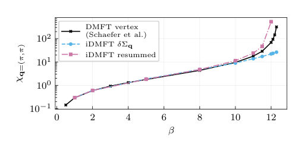
<figcaption class="paper-figure-caption"><b>Fig 2.</b> Figure 1 presents our results at U = 2 and β = 5. Panels (a, b) display the real-space susceptibility obtained from iDMFT and from the standard DMFT vertex calculation; panels (c, d) show the same data in momentum space. Both methods reproduce the onset of an antiferromagnetic (AFM) instability with a checkerboard pattern in χi and a pronounced peak at the AFM ordering vector (π, π) in χq. The faint artifacts at the box boundaries in (a) are not a finite-size effect but stem from the fact that the magnitude of χi reaches the noise threshold of the impurity solver (see Appendix A for further details). Panel (e) compares χq along the Γ-X-M-Γ high-symmetry path. All curves agree very well; the...</figcaption>
</figure>
<figure class="paper-figure-card">
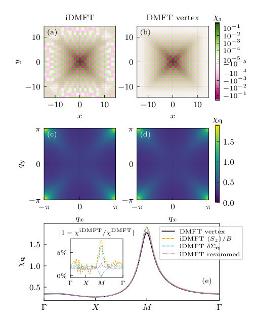
<figcaption class="paper-figure-caption"><b>Fig 3.</b> Figure 1. Lattice spin susceptibility of the half-filled 2D Hubbard model at U = 2 and β = 5 from (a, c) iDMFT and (b, d) the DMFT vertex. Panels (a, b) show χi in real space and panels (c, d) χq in momentum space. The iDMFT result in (a) is computed as ⟨Sz i ⟩/B from the expectation value of the NRG impurity solver. Panel (e) shows χq along a high-symmetry path obtained from the DMFT ver- tex, iDMFT via ⟨Sz i ⟩/B, iDMFT via δΣq [Eq. (29)], and iDMFT resummation as defined in Eq. (31). The inset shows the relative de- viation of all three iDMFT results w.r.t. the DMFT vertex result.</figcaption>
</figure>
<figure class="paper-figure-card">
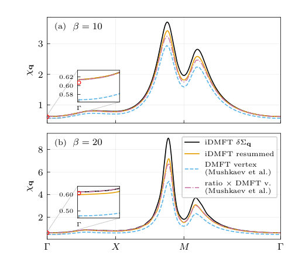
<figcaption class="paper-figure-caption"><b>Fig 4.</b> Figure 3. Lattice spin susceptibility at U = 8, t′ = 0, n = 0.78, and (a) β = 10, (b) β = 20. Results are calculated with iDMFT via Eq. (29) (black) and Eq. (31) (orange) and compared to DMFT results from Ref. 25. We rescaled their raw data (blue dashed curve) with the ratio χDMFT q=0 /χMush. q=0 , where χDMFT q=0 is the single- site DMFT result. The latter value is marked with a hollow red circle at the Γ point and enlarged in the insets.</figcaption>
</figure>
<figure class="paper-figure-card">
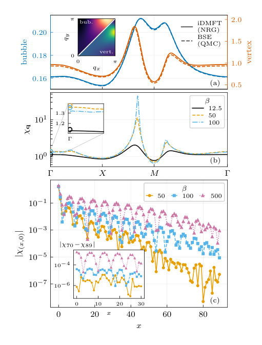
<figcaption class="paper-figure-caption"><b>Fig 5.</b> Figure 4. Lattice spin susceptibility at U = 8, t′ = −0.2, n = 0.72 and various β. (a) Bubble and vertex contributions to χq along Γ-X-M-Γ at β = 12.5 (i.e., the parameters of Ref. 26). Inset: the same decomposition as a heat map in the irreducible Brillouin zone (bubble upper-left, vertex lower-right). The solid red curve for the vertex contribution is from resummed iDMFT with NRG as the impurity solver; the dashed red curve is the BSE result from a QMC impurity solver [27]. (b) χq along the high-symmetry path for β = 12.5, 50, 100, reaching unprecedented, low temperatures. Cir- cles mark the single-site DMFT susceptibility χq=0; the inset zooms in near Γ to show that it coincides with the...</figcaption>
</figure>
</div>

<p><strong>Summary.</strong> This paper introduces an improved method using inhomogeneous Dynamical Mean-Field Theory (iDMFT) to calculate lattice susceptibilities by employing linear response theory. This approach bypasses the computationally prohibitive calculation of two-particle vertex functions inherent in standard methods. The results confirm its accuracy while significantly expanding the accessible temperature range for studying magnetic instabilities in correlated electron models.</p>
<p><strong>Why it may be interesting.</strong> While focused on condensed matter magnetism, the use of linear response theory in strongly correlated systems is a powerful general technique for calculating susceptibilities that can inform open quantum system dynamics or magnetic responses in AMO contexts.</p>
<details>
<summary>Detailed structure</summary>
<p><strong>Main problem.</strong> The primary goal is calculating static lattice susceptibilities ($\chi$) for strongly correlated electron systems, specifically addressing the computational difficulty of standard vertex function approaches.</p>
<p><strong>Main result.</strong> The proposed inhomogeneous Dynamical Mean-Field Theory (iDMFT) method successfully calculates $\chi$ by utilizing linear response theory to an external field, showing good agreement with established vertex methods while enabling access to very low temperatures.</p>
<p><strong>Method.</strong> The authors derive the susceptibility using a linear response expansion in a small applied magnetic field ($B$), which avoids explicit calculation of two-particle vertex functions and is compatible with various impurity solvers like NRG.</p>
<p><strong>Model / system.</strong> The study focuses on the Hubbard model, typically analyzed on a 2D square lattice. The theoretical framework involves mapping the lattice problem onto an impurity problem solved via DMFT/iDMFT techniques.</p>
<p><strong>Key observables.</strong> Static lattice magnetic susceptibility ($\chi_q$ or $\chi_i$), which measures the system's response to external magnetic perturbations.</p>
<p><strong>Important parameters / regimes.</strong> Interaction strength ($U$), temperature ($eta^{-1}$), and doping level ($n$). The analysis compares results across different interaction regimes.</p>
<p><strong>Assumptions / limitations.</strong> The method relies on expanding in the applied field $B$ (linear response) to circumvent complex vertex calculations. For thermodynamic limits, a specific resummation scheme is necessary for divergence.</p>
<p><strong>Figures summary.</strong> Figures compare real-space and momentum-space susceptibility ($\chi_i, \chi_q$) across different methods (iDMFT vs. DMFT vertex) at various temperatures and interaction strengths, demonstrating convergence after applying the appropriate resummation.</p>
<p><strong>Paper structure.</strong> The paper develops a novel iDMFT formalism for $\chi$ via linear response theory, proves its equivalence to standard approaches using Ward identities, and applies it numerically to benchmark results against established DMFT calculations across different parameter regimes.</p>
</details>
<details>
<summary>Abstract</summary>
<p>We present a method for calculating static lattice susceptibilities with inhomogeneous dynamical mean-field theory. The method utilizes the response of the system to an external field and thereby circumvents two-particle vertex functions. We demonstrate the success of our approach for the magnetic susceptibility of the square-lattice Hubbard model using the numerical renormalization group as an impurity solver and show that it compares well with the results obtained using the standard vertex approach. As it avoids vertex functions and is compatible with virtually any impurity solver, our method is able to reach low temperatures that are hard to access with other methods.</p>
</details>
<p><sub><a href="#top">↑ back to top</a></sub></p>

<p><a id="paper-2608.15607"></a></p>
<h3 id="temperature-encoding-rates-of-two-level-probes-in-de-sitter-spacetime"><a href="http://arxiv.org/abs/2608.15607v1">Temperature encoding rates of two-level probes in de Sitter spacetime</a></h3>
<p><strong>Authors:</strong> Yao Jin<br>
<strong>Type:</strong> theory · <strong>Category:</strong> other · <strong>PDF:</strong> <a href="https://arxiv.org/pdf/2608.15607v1">https://arxiv.org/pdf/2608.15607v1</a><br>
<strong>Analysis basis:</strong> full PDF text, analyzed in chunks
<strong>Topic relevance:</strong> <code>quantum measurements</code> <strong>3/5</strong> · <code>driven-dissipative phase transition</code> <strong>2/5</strong> · <code>Keldysh / 2PI / non-Gaussian methods</code> <strong>1/5</strong> · <code>correlated / nonlocal dissipation</code> <strong>1/5</strong> · <code>methods for driven-dissipative</code> <strong>1/5</strong></p>
<div class="figure-strip-hint">↔ Scroll figures horizontally</div>
<div class="paper-figures-scroll">
<figure class="paper-figure-card">
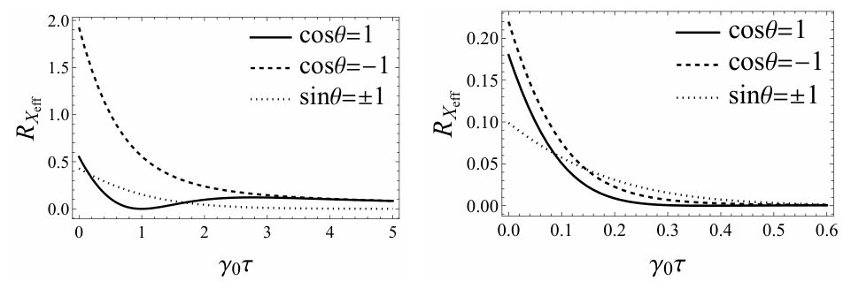
<figcaption class="paper-figure-caption"><b>Fig 1.</b> FIG. 1: RXeff as a function of γ0τ for initial states cos θ = 1, cos θ = −1, and sin θ = ±1,</figcaption>
</figure>
<figure class="paper-figure-card">
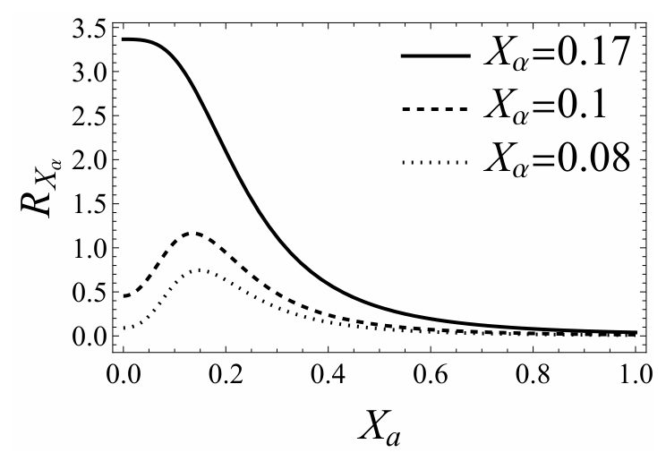
<figcaption class="paper-figure-caption"><b>Fig 2.</b> FIG. 2: RXα as function of Xa with intrinsic temperature Xα = 0.17, 0.1, 0.08 respectively.</figcaption>
</figure>
<figure class="paper-figure-card">
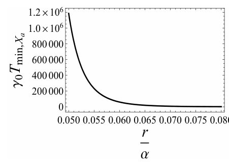
<figcaption class="paper-figure-caption"><b>Fig 3.</b> FIG. 3: γ0Tmin,Xa as function of separation r</figcaption>
</figure>
</div>

<p><strong>Summary.</strong> This theoretical paper uses quantum metrology to determine the precision limit for estimating temperature parameters encoded in two-level atoms placed in de Sitter spacetime. It finds that the total measurable temperature rate is additive from intrinsic and acceleration-induced (Unruh) sources, and crucially, it identifies an optimal inherent acceleration that maximizes the measurement of the background temperature. The results suggest these measurements remain feasible even far from the cosmological horizon.</p>
<p><strong>Why it may be interesting.</strong> This work bridges quantum information theory (metrology) with fundamental physics in curved spacetime (de Sitter space), providing concrete predictions about how thermal effects can be measured using quantum probes, which is highly relevant to open quantum systems research.</p>
<details>
<summary>Detailed structure</summary>
<p><strong>Main problem.</strong> The study quantifies the rate at which temperature parameters (Gibbons-Hawking and Unruh) are encoded in two-level quantum probes interacting with a fluctuating scalar field in de Sitter spacetime.</p>
<p><strong>Main result.</strong> The total encoding rate is additive, and non-zero inherent acceleration does not suppress intrinsic temperature encoding; instead, an optimal acceleration maximizes this rate.</p>
<p><strong>Method.</strong> Quantum metrology principles are applied by optimizing the initial state, evolution time, and measurement basis to maximize the estimation rate of temperature parameters.</p>
<p><strong>Model / system.</strong> The system involves a two-level atom (probe) coupled to a massless scalar field in de Sitter spacetime. The dynamics are governed by an open quantum system approach using a Lindblad master equation.</p>
<p><strong>Key observables.</strong> Temperature encoding rate ($R$), effective temperature ($T_{	ext{eff}}$), intrinsic Gibbons–Hawking temperature ($T_{GH}$), and position-dependent Unruh temperature ($T_U$).</p>
<p><strong>Important parameters / regimes.</strong> Separation distance from the horizon, inherent acceleration ($a$), total probe time ($T$), and initial state parameters ($  heta, \phi$).</p>
<p><strong>Assumptions / limitations.</strong> The analysis relies on a weak coupling assumption for the evolution of the reduced density matrix.</p>
<p><strong>Figures summary.</strong> Not specified in the notes; the text describes mathematical relationships between encoding rates and dependencies on acceleration/distance.</p>
<p><strong>Paper structure.</strong> The paper first establishes the quantum-metrological framework, deriving the effective temperature as a sum of intrinsic and Unruh components. It then calculates the encoding rate by optimizing parameters, revealing the non-monotonic dependence of $R_{X_\alpha}$ on $T_U$, and finally assessing the feasibility of measurements at large separations.</p>
</details>
<details>
<summary>Abstract</summary>
<p>We investigate the temperature encoding process of two-level probes in de Sitter spacetime within the framework of open quantum systems. From a quantum-metrological perspective, we quantify the temperature encoding rate, which characterizes the precision of estimating a temperature parameter with a fixed total probe time. The maximal encoding rate is obtained by optimizing the initial state, evolution time, and measurement basis of each probe. For a static probe separated by a finite distance from a freely falling observer, both the intrinsic Gibbons--Hawking temperature and the position-dependent Unruh temperature are encoded in the probe state. We find that the encoding rate of the effective temperature is equal to the sum of the encoding rates of the intrinsic temperature and the Unruh temperature associated with the probe's inherent acceleration. Interestingly, when the intrinsic temperature is sufficiently small, the encoding rate of the intrinsic temperature initially increases with the Unruh temperature, reaches a maximum, and then decreases to zero. Thus, a nonzero inherent acceleration does not necessarily suppress the encoding of the intrinsic temperature. Instead, there exists an optimal inherent acceleration at which its encoding rate is maximized. Furthermore, we investigate the encoding rate of the Unruh temperature and the minimum total probe time required to estimate it with sufficient precision as functions of the separation distance. We find that the required total probe time and the corresponding number of probes remain experimentally feasible even when the probes are located relatively far from the cosmological horizon, with a radial position as large as $0.1$ times the horizon radius.</p>
</details>
<p><sub><a href="#top">↑ back to top</a></sub></p>

<p><a id="paper-2608.16557"></a></p>
<h3 id="absence-of-critical-scaling-in-the-schelling-segregation-model"><a href="http://arxiv.org/abs/2608.16557v1">Absence of critical scaling in the Schelling segregation model</a></h3>
<p><strong>Authors:</strong> Sam Rifaki<br>
<strong>Type:</strong> theory · <strong>Category:</strong> statistical mechanics · <strong>PDF:</strong> <a href="https://arxiv.org/pdf/2608.16557v1">https://arxiv.org/pdf/2608.16557v1</a><br>
<strong>Analysis basis:</strong> full PDF text, analyzed in chunks
<strong>Topic relevance:</strong> <code>non-equilibrium universality</code> <strong>3/5</strong> · <code>driven-dissipative phase transition</code> <strong>2/5</strong> · <code>Frenkel-Kontorova</code> <strong>1/5</strong> · <code>methods for driven-dissipative</code> <strong>1/5</strong></p>
<div class="figure-strip-hint">↔ Scroll figures horizontally</div>
<div class="paper-figures-scroll">
<figure class="paper-figure-card">
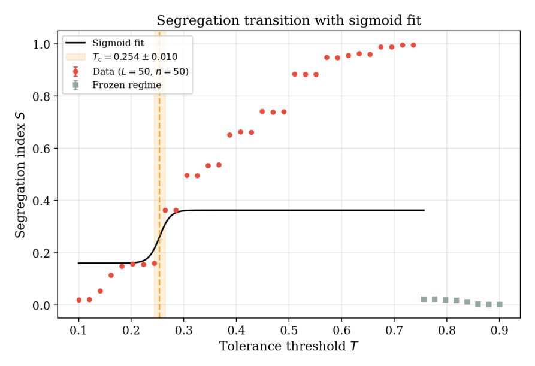
<figcaption class="paper-figure-caption"><b>Fig 1.</b> Figure 1: Segregation index S and interface density versus tolerance T for L = 80, averaged over 50 trials with per-agent noise σ = 0.02. Shaded regions show ±1 standard deviation.</figcaption>
</figure>
<figure class="paper-figure-card">
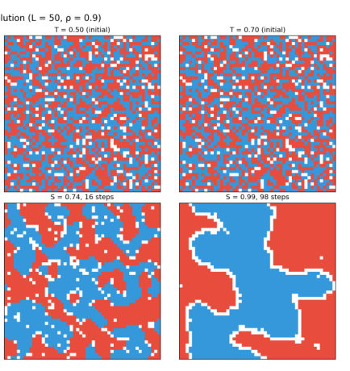
<figcaption class="paper-figure-caption"><b>Fig 2.</b> Figure 2: Equilibrium configurations on an L = 80 grid for selected tolerance values.</figcaption>
</figure>
<figure class="paper-figure-card">
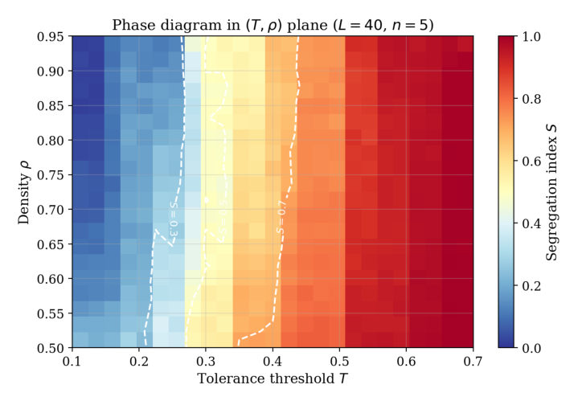
<figcaption class="paper-figure-caption"><b>Fig 3.</b> Figure 3: Phase diagram in the (T, ρ) plane. Color encodes the equilibrium segregation index. The mixed-segregated boundary is sharp across all densities.</figcaption>
</figure>
<figure class="paper-figure-card">
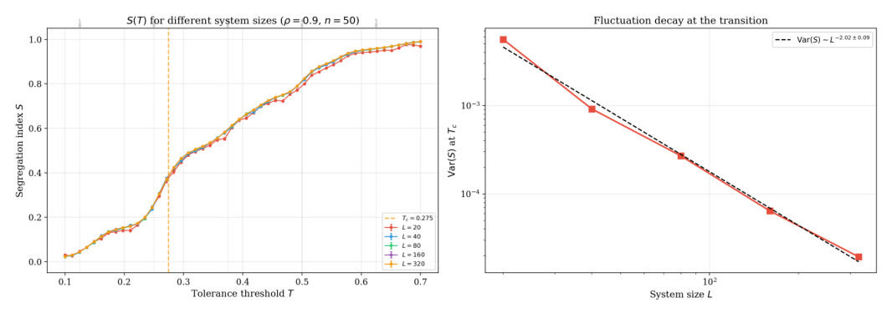
<figcaption class="paper-figure-caption"><b>Fig 4.</b> Figure 4: Left: Segregation index vs. tolerance for five system sizes. The curves steepen with L but share the same midpoint. Right: Variance of S at Tc versus system size, with a power-law fit Var(S) ∼L−α, α = 2.02 ± 0.09.</figcaption>
</figure>
<figure class="paper-figure-card">
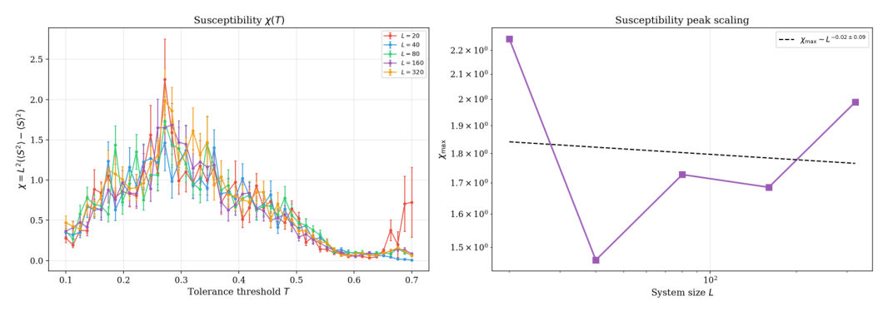
<figcaption class="paper-figure-caption"><b>Fig 5.</b> Figure 5: Left: Susceptibility χ(T) for five system sizes. Right: Peak susceptibility vs. L. The scaling exponent γ/ν = −0.015 ± 0.086 is indistinguishable from zero.</figcaption>
</figure>
</div>

<p><strong>Summary.</strong> This work investigates whether the segregation transition in the Schelling model belongs to a critical universality class. By applying extensive finite-size scaling analysis and examining various dynamic regimes, the authors conclude that the system does not exhibit critical behavior. Instead, the transition is governed by deterministic dynamics related to local satisfaction thresholds.</p>
<p><strong>Why it may be interesting.</strong> While not quantum mechanical, the rigorous application of critical scaling theory to a classical interacting particle system provides valuable insights into when complex pattern formation transitions are governed by true phase transitions versus deterministic/mean-field crossovers.</p>
<details>
<summary>Detailed structure</summary>
<p><strong>Main problem.</strong> To determine whether the mixed-to-segregated transition in the Schelling segregation model exhibits critical scaling behavior characteristic of a continuous phase transition.</p>
<p><strong>Main result.</strong> The analysis strongly rules out criticality, showing that standard finite-size scaling diagnostics fail across multiple neighborhood definitions and lattice sizes. The mechanism is attributed to deterministic dynamics and lack of long-range correlation rather than critical phenomena.</p>
<p><strong>Method.</strong> The study employs extensive numerical simulations on lattices, utilizing Finite-Size Scaling (FSS) diagnostics like variance analysis and Binder cumulants, alongside mean-field theory and cascade branching ratio calculations.</p>
<p><strong>Model / system.</strong> The Schelling segregation model is simulated on an L x L lattice with periodic boundary conditions. Agents of two types attempt to move when local satisfaction falls below a global tolerance threshold T, leading to segregation.</p>
<p><strong>Key observables.</strong> Segregation index (S), interface density (I), variance of S ($ ext{Var}(S)$), Binder cumulant ($U_4$), and the characteristic length scale $r^*$ for dissimilarity.</p>
<p><strong>Important parameters / regimes.</strong> Lattice size L (up to 320), agent fraction $
ho=0.9$, neighborhood radius $r_0$ (up to 6), and tolerance threshold T.</p>
<p><strong>Assumptions / limitations.</strong> The analysis compares empirical results against theoretical predictions for critical phenomena, and some parts rely on mean-field approximations or cascade theory assumptions.</p>
<p><strong>Figures summary.</strong> Figures illustrate the dependence of segregation index on tolerance, phase diagrams in (T, $
ho$), and how $T_c$ shifts when agent tolerances are drawn from a Beta distribution parameterized by $\kappa$.</p>
<p><strong>Paper structure.</strong> The paper systematically tests for criticality using FSS diagnostics across various lattice sizes and neighborhood definitions. It contrasts these results with mean-field predictions derived from the satisfaction spectrum, ultimately concluding that non-critical mechanisms govern the transition.</p>
</details>
<details>
<summary>Abstract</summary>
<p>We find no evidence of critical scaling in the Schelling segregation model, in either the Moore neighborhood or its dense-spectrum extension to Chebyshev radii up to $r_0 = 6$ ($k = 168$ neighbors). On periodic grids up to $L = 320$ with 50 trials per point (&gt; 12,500 runs), every finite-size scaling diagnostic in the Moore baseline fails: the per-$L$ $T_c$ does not drift, Var$(S) \sim L^{-2.02 \pm 0.09}$ matches trivial averaging, $γ/ν\approx 0$, and the scaling collapse never reaches a finite optimum. The 8-site Moore neighborhood restricts satisfaction to ratios $j/k$ with $k \leq 8$, giving $S(T)$ a staircase structure with 23 rational thresholds; discreteness alone does not forbid criticality (cf. the Ising model), but the scaling evidence rules it out empirically. A branching-ratio calculation predicts subcritical cascades of mean size $1/(1-R)$ and is validated by perturbation experiments to within 15%; the multiscalar dissimilarity length stays finite across the transition. The dense-spectrum extension strengthens the negative verdict: across $r_0 \in {3,4,5,6}$ on $L \in {40,80,160}$ the Binder cumulant has no $L$-curve crossing and the per-$L$ $T_c$ drift is monotonic and unsaturated; at $r_0 = 4$, extending to $L = 320$ gives $α= -2.70$, below the critical boundary $α= -2$, dissolving an apparent $α= +0.81$ signal visible only on $L \in {40,80}$. The mechanism is the absence of long-range correlation in equilibrium plus deterministic high-$k$ dynamics, not the staircase structure. With a Beta-distributed heterogeneous tolerance, the intolerant tail drives segregation even at moderate population-average tolerance. The staircase theorem and cascade mechanism together account for the Schelling transition without invoking critical phenomena.</p>
</details>
<p><sub><a href="#top">↑ back to top</a></sub></p>

<p><a id="paper-2608.14923"></a></p>
<h3 id="hidden-transverse-flow-topology-in-partially-coherent-structured-light"><a href="http://arxiv.org/abs/2608.14923v1">Hidden transverse-flow topology in partially coherent structured light</a></h3>
<p><strong>Authors:</strong> Rosario Martínez-Herrero, Ángel S. Sanz<br>
<strong>Type:</strong> theory · <strong>Category:</strong> other · <strong>PDF:</strong> <a href="https://arxiv.org/pdf/2608.14923v1">https://arxiv.org/pdf/2608.14923v1</a><br>
<strong>Analysis basis:</strong> full PDF text, analyzed in chunks
<strong>Topic relevance:</strong> <code>interference shaping light</code> <strong>3/5</strong> · <code>quantum measurements</code> <strong>2/5</strong> · <code>Keldysh / 2PI / non-Gaussian methods</code> <strong>1/5</strong> · <code>methods for driven-dissipative</code> <strong>1/5</strong></p>
<div class="figure-strip-hint">↔ Scroll figures horizontally</div>
<div class="paper-figures-scroll">
<figure class="paper-figure-card">
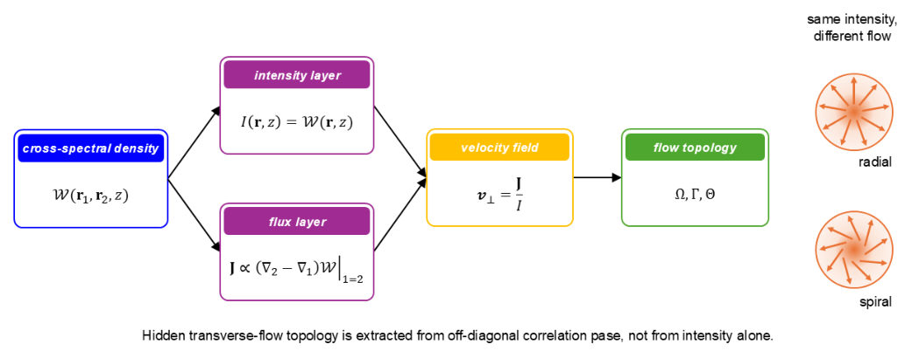
<figcaption class="paper-figure-caption"><b>Fig 1.</b> FIG. 1. Conceptual structure of the generalized flux-trajectory formulation. The cross-spectral density W(r1, r2, z) contains both the diagonal intensity content and the off-diagonal correlation-phase information. The former gives the spectral density I(r, z) = W(r, r, z), whereas the latter gives access to the generalized transverse flux J. Together, I and J define the effective velocity field v⊥= J/I. The topology of this velocity field is characterized through streamlines and diagnostics such as circulation Γ, vorticity Ω, and accumulated angular displacement Θ. The same intensity distribution can therefore support different transverse-flow topologies.</figcaption>
</figure>
<figure class="paper-figure-card">
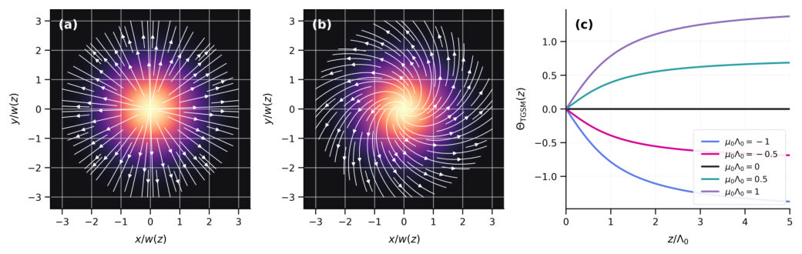
<figcaption class="paper-figure-caption"><b>Fig 2.</b> FIG. 2. Hidden rotational flow in TGSM beams. The background color represents the normalized Gaussian spectral density S(r, z), shown in coordinates scaled by the propagated beam size w(z). White curves are streamlines of the generalized transverse velocity field at z/Λ0 = 1. (a) In the untwisted case, µ0Λ0 = 0, so that µ(z)Λ0 = 0 for all z, the flow is purely radial. (b) For a twisted TGSM beam with µ0Λ0 = 1, at the displayed plane z/Λ0 = 1 one has µ(z)Λ0 = 1/2. The intensity remains Gaussian, but the nonseparable coherence phase produces an azimuthal component vφ = µ(z)r, leading to spiral streamlines. (c) Accumulated angular displacement ΘTGSM(z) = µ0Λ0 arctan (z/Λ0) for several values...</figcaption>
</figure>
<figure class="paper-figure-card">
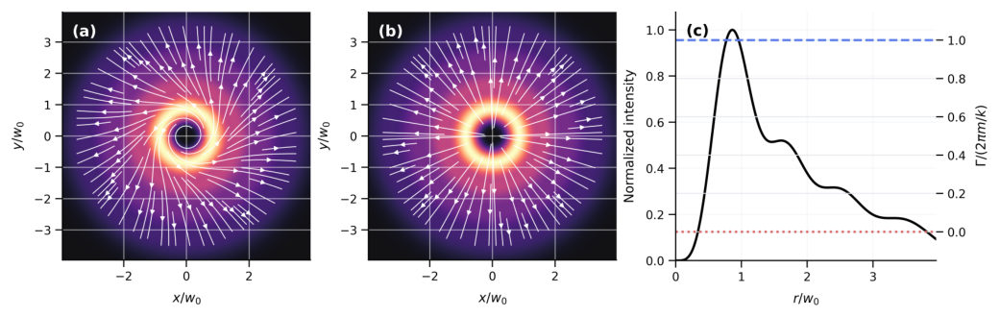
<figcaption class="paper-figure-caption"><b>Fig 3.</b> FIG. 3. Hidden transverse-flow topology in LCD beams. The background color represents the normalized intensity IN,m(r, z), which is the same in both cases. White curves show streamlines of the generalized transverse velocity field at z = zR. (a) A single-charge LCD source with topological charge +m displays spiral flow because vφ = m/(kr). (b) A balanced superposition of opposite charges +m and −m has the same intensity profile, but the azimuthal flux cancels and the flow is purely radial. (c) Radial intensity profile and circulation normalized to 2πm/k. The single-charge source has Γ+m = 2πm/k, whereas the balanced source has Γ±m = 0. Parameters: N = 3, m = 2, w0 = 1, zR = 1, k = 2, and...</figcaption>
</figure>
<figure class="paper-figure-card">
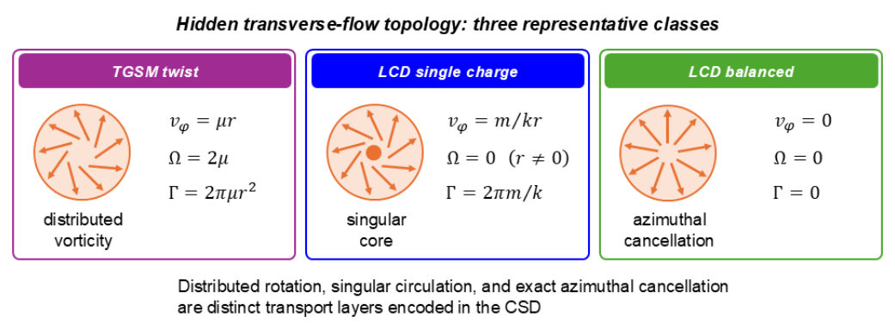
<figcaption class="paper-figure-caption"><b>Fig 4.</b> FIG. 4. Schematic classification of hidden transverse-flow topology in the analytical cases considered in this work. A TGSM beam with twist displays distributed rotational transport, with vφ = µr, circulation Γ = 2πµr2, and uniform vorticity Ω= 2µ. A single-charge LCD beam displays angular transport of topological origin, with vφ = m/(kr) and radius-independent circulation Γ = 2πm/k, while the vorticity vanishes away from the singular core. A balanced LCD source with opposite charges +m and −m has the same radial intensity profile as the single-charge case, but the azimuthal flux cancels exactly, giving vφ = 0, Γ = 0, and Ω= 0.</figcaption>
</figure>
</div>

<p><strong>Summary.</strong> The paper shows that partial coherence allows for the encoding of hidden transverse energy flow topologies invisible when only measuring light intensity. By deriving a generalized flux from the cross-spectral density, authors define an effective velocity field that maps out these flow trajectories. This proves that full physical information requires analyzing the off-diagonal phase structure of the CSD, not just its magnitude.</p>
<p><strong>Why it may be interesting.</strong> This work extends the understanding of optical coherence beyond simple intensity measurements by introducing a transport-based diagnostic derived from higher-order correlation functions, analogous to current density in quantum field theory.</p>
<details>
<summary>Detailed structure</summary>
<p><strong>Main problem.</strong> To demonstrate that partial coherence encodes hidden transverse-flow topology, which is invisible when analyzing only the intensity profile of structured light.</p>
<p><strong>Main result.</strong> The generalized transverse flux derived from the cross-spectral density reveals flow structures (like vorticity or circulation) in beams—such as TGSM or LCD beams—that are entirely masked by identical intensity measurements.</p>
<p><strong>Method.</strong> Formulating a generalized transverse flux and an effective velocity field using local differential operations on the two-point correlation function (CSD).</p>
<p><strong>Model / system.</strong> Quasi-monochromatic, paraxial partially coherent beams, analyzed using their cross-spectral density $W(\mathbf{r}_1, \mathbf{r}_2, z)$. Specific examples include Twisted Gaussian Schell-model and Liquid Crystal Display (LCD) sources.</p>
<p><strong>Key observables.</strong> Generalized transverse flux ($\mathbf{J}$), effective velocity field ($\mathbf{v}_\perp$), circulation ($\Gamma$), vorticity ($\Omega$), and flow trajectories (spiral vs. radial).</p>
<p><strong>Important parameters / regimes.</strong> Partial coherence level, beam type (TGSM, LCD), propagation distance ($z$).</p>
<p><strong>Assumptions / limitations.</strong> The beams are quasi-monochromatic and paraxial; the analysis relies on reconstructing quantities from the complex second-order coherence function.</p>
<p><strong>Figures summary.</strong> Figures conceptually illustrate that the CSD contains both diagonal intensity content and off-diagonal correlation-phase information, which is used to extract the generalized transverse flux defining the flow field.</p>
<p><strong>Paper structure.</strong> The paper develops a theoretical framework starting from the CSD to define a generalized flux ($\mathbf{J}$), derives an effective velocity field ($\mathbf{v}_\perp = \mathbf{J}/I$), and then applies this formalism to specific beam families (TGSM, LCD) to contrast their hidden flow topologies against their measured intensities.</p>
</details>
<details>
<summary>Abstract</summary>
<p>Partial coherence is commonly viewed as a mechanism that reduces contrast or smooths intensity structure. Here we show that it can also encode hidden transverse-flow topology. Starting from the cross-spectral density, we formulate a generalized transverse flux, an effective velocity field, and the associated flux trajectories for quasi-monochromatic partially coherent paraxial beams. This construction converts two-point correlation phases into local transport information and reduces to the usual coherent energy-flow picture in the single-mode limit. Because the generalized flux is obtained through a local differential operation on the cross-spectral density, the proposed trajectories can, in principle, be reconstructed from measurements of the complex second-order coherence function, without requiring direct measurement of individual optical paths. Two analytical beam families expose this hidden topology. In twisted Gaussian Schell-model beams, a Gaussian intensity hides a distributed rotational flow with nonzero vorticity. In Laguerre-Christoffel-Darboux beams, sources with identical intensity profiles can have different flux topology, producing either spiral or purely radial trajectories. Thus, intensity and coherence magnitude do not exhaust the physical information contained in the cross-spectral density: partial coherence can reorganize the hidden topology of transverse optical transport.</p>
</details>
<p><sub><a href="#top">↑ back to top</a></sub></p>

<p><a id="paper-2608.14807"></a></p>
<h3 id="multicolor-nonlinear-chiral-quantum-optics-beyond-phase"><a href="http://arxiv.org/abs/2608.14807v1">Multicolor nonlinear chiral quantum optics: beyond phase</a></h3>
<p><strong>Authors:</strong> Cedric Dufresne, Annabelle Makowski, Nir Rotenberg<br>
<strong>Type:</strong> theory · <strong>Category:</strong> other · <strong>PDF:</strong> <a href="https://arxiv.org/pdf/2608.14807v1">https://arxiv.org/pdf/2608.14807v1</a><br>
<strong>Analysis basis:</strong> full PDF text, analyzed in chunks
<strong>Topic relevance:</strong> <code>interference shaping light</code> <strong>3/5</strong> · <code>Keldysh / 2PI / non-Gaussian methods</code> <strong>1/5</strong> · <code>Tavis-Cummings &amp; cavity-many-emitter</code> <strong>1/5</strong> · <code>driven-dissipative phase transition</code> <strong>1/5</strong> · <code>methods for driven-dissipative</code> <strong>1/5</strong></p>
<div class="figure-strip-hint">↔ Scroll figures horizontally</div>
<div class="paper-figures-scroll">
<figure class="paper-figure-card">
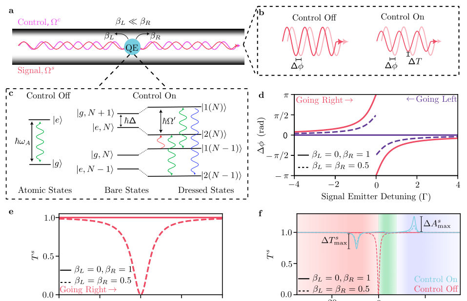
<figcaption class="paper-figure-caption"><b>Fig 1.</b> Figure 1. Multicolor quantum optics in a waveguide. a) A chirally coupled quantum emitter (QE) in a waveguide, here coupled efficiently to the right-propagating mode (βR ≫βL) interacts with a weak signal beam and a control beam that may be much stronger. b) The signal is modulated by the interaction with the QE, which results in a phase shift, ∆ϕ, with no control beam and both a modulation of the phase and amplitude, ∆T, when the control is on. c) This difference can be understood in terms of the modified energy landscape of the QE due to the control beam, the details of which depend on the control-emitter detuning ∆= ωc −ωA and the generalized Rabi frequency Ω′ = p</figcaption>
</figure>
<figure class="paper-figure-card">
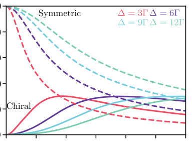
<figcaption class="paper-figure-caption"><b>Fig 2.</b> Figure 3. Maximum signal extinction for symmetric (dashed) and chiral (solid) coupling as a function of control power, for control-emitter detunings ∆= 3Γ, 6Γ, 9Γ and 12Γ. The ∆= 3Γ curves (red), for example, follow the red, dashed lines in Fig. 2a and b.</figcaption>
</figure>
<figure class="paper-figure-card">
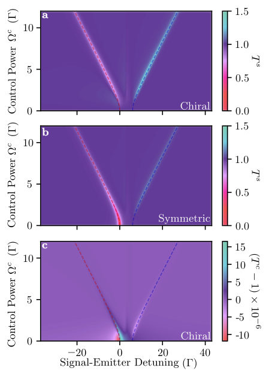
<figcaption class="paper-figure-caption"><b>Fig 3.</b> Figure 2. Control power-dependent transmission spectrum of the signal for (a) chiral and (b) symmetric scattering, and (c) of the control beam in the chiral geometry. In all cases, ∆= 3Γ and the signal-emitter detuning is scanned. In all panes, the transition corresponding to the AC Stark shift is denoted by a dashed red curve, while the three-photon am- plification is shown by a dashed blue curve. As can be seen when comparing (a) to (c), photons lost to the signal are re- covered in the control and vice versa, although the change to the control beam is about 5-orders of magnitude smaller (as this beam is much stronger than the signal (Ωs = 0.01Γ).</figcaption>
</figure>
<figure class="paper-figure-card">

<figcaption class="paper-figure-caption"><b>Fig 4.</b> Figure 4. Three-photon amplification. (a) Maximum signal amplification for symmetric (dashed) and chiral (solid) cou- pling as a function of control power, for control-emitter de- tunings ∆= 3Γ, 6Γ, 9Γ and 12Γ. The ∆= 3Γ curves (red), for example, follow the blue, dashed lines in Fig. 2a and b. b Maximum achievable amplification (left axis, red curves) for each control power, for the symmetric and chiral configura- tions. For ease, points corresponding to curves shown in (a) are marked. The detuning, ∆, at which the optimal amplifi- cation is found is shown in the purple curve (right axis).</figcaption>
</figure>
<figure class="paper-figure-card">
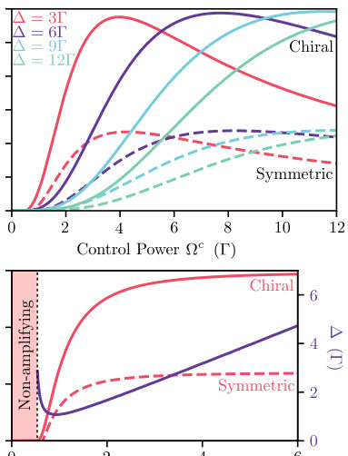
<figcaption class="paper-figure-caption"><b>Fig 5.</b> Fig. 4, although in a different way from the extinction. Following ∆As max for ∆= 3Γ (i.e., blue dashed curves in Figs. 2a and b), in the red curves in Fig. 4a we ob- serve that the amplification in both the chiral (solid) and symmetric (dashed) configuration increases once Ωc in- creases beyond ≈Γ, peaks when Ωc ≈4Γ, and then decreases beyond this value. We interpret this peak as arising due to a balance between the strength of the non- linear response, power-induced decoherence, and emit- ter saturation, all of which increase with the control field. Strikingly, the chiral amplification is significantly stronger than that in the symmetric configuration, peak- ing at ∆Asym max = 11.8%...</figcaption>
</figure>
</div>

<p><strong>Summary.</strong> This theoretical paper explores nonlinear chiral quantum optics by introducing a second photon beam to control emitter interactions. The authors demonstrate that chirality allows for strong amplitude modulation, enabling coherent three-photon amplification efficiencies up to 30%. This reveals a new regime for all-optical control at few-photon energies.</p>
<p><strong>Why it may be interesting.</strong> This work directly addresses advanced quantum optics phenomena involving light-matter interaction, specifically exploring how engineered directional coupling (chirality) can enhance non-linear optical processes like few-photon amplification beyond what is achievable with standard symmetric interactions.</p>
<details>
<summary>Detailed structure</summary>
<p><strong>Main problem.</strong> To investigate chiral quantum nonlinear optics beyond simple phase modulation, demonstrating that adding a second photon beam enables both phase and amplitude modulation.</p>
<p><strong>Main result.</strong> Chiral interactions allow for strong amplitude modulation via coherent energy transfer, predicting three-photon amplification efficiencies up to 30%, which is significantly higher than symmetric configurations.</p>
<p><strong>Method.</strong> The study uses the Green function formalism and Bloch equations, approximating by separating signal and control fields when one beam is much stronger than the other.</p>
<p><strong>Model / system.</strong> The system involves quantum emitters interacting with two counter-propagating photon beams (signal and control) in both chiral ($eta_L 
eq eta_R$) and symmetric geometries.</p>
<p><strong>Key observables.</strong> Phase shift ($\Delta\phi$), amplitude modulation ($\Delta T$ or $\Delta A$), and three-photon amplification efficiency.</p>
<p><strong>Important parameters / regimes.</strong> Control beam power ($\Omega_c$), signal detuning ($\Delta$), and the ratio of coupling efficiencies defining chirality.</p>
<p><strong>Assumptions / limitations.</strong> The analysis assumes an idealized case with no losses or noise, and employs a separation approximation for the signal and control fields.</p>
<p><strong>Figures summary.</strong> Figures compare phase shift vs. amplitude modulation (Fig 1), show signal transmission spectra dependence on control power for chiral vs. symmetric cases (Fig 2), and plot control-power-dependent maximum extinction and three-photon amplification for both geometries (Figs 3 &amp; 4).</p>
<p><strong>Paper structure.</strong> The paper progresses by first establishing the limitation of phase-only modulation in standard chiral setups, then introducing a second beam to enable amplitude control. It develops the theoretical framework using Green functions and Bloch equations, presenting results comparing the enhanced nonlinear effects (like three-photon amplification) found uniquely or more strongly in the chiral geometry.</p>
</details>
<details>
<summary>Abstract</summary>
<p>Chiral quantum nonlinearities that arise when light interacts with quantum emitters are known to modulate only the phase but not the amplitude of scattered photons, enabling the creation of non-reciprocal photonic elements, quantum logic gates, and quantum network protocols. In this work, we show that the addition of a second photon beam drastically changes this picture, enabling both phase and amplitude modulation. Surprisingly, coherent photon transfer between the different beams enables a stronger amplitude modulation than standard symmetric interactions. This is most obvious in the coherent, three-photon amplification, which we predict peaks with a 30% efficiency in a chiral geometry, 3x the efficiency of the symmetric configuration. Our results uncover a new regime of chiral quantum optics and provide a route towards more efficient all-optical control at few-photon energies.</p>
</details>
<p><sub><a href="#top">↑ back to top</a></sub></p>

<p><a id="paper-2608.15827"></a></p>
<h3 id="resource-analysis-for-quantum-simulation-of-spatially-varying-transport-reaction-equations"><a href="http://arxiv.org/abs/2608.15827v1">Resource Analysis for Quantum Simulation of Spatially Varying Transport-Reaction Equations</a></h3>
<p><strong>Authors:</strong> Benjamin Jasperson, Krishna Garikipati, Siddhartha Srivastava<br>
<strong>Type:</strong> theory · <strong>Category:</strong> quantum information and computing · <strong>PDF:</strong> <a href="https://arxiv.org/pdf/2608.15827v1">https://arxiv.org/pdf/2608.15827v1</a><br>
<strong>Analysis basis:</strong> full PDF text, analyzed in chunks
<strong>Topic relevance:</strong> <code>methods for driven-dissipative</code> <strong>3/5</strong> · <code>analog quantum simulation</code> <strong>2/5</strong> · <code>correlated / nonlocal dissipation</code> <strong>1/5</strong> · <code>quantum measurements</code> <strong>1/5</strong></p>
<div class="figure-strip-hint">↔ Scroll figures horizontally</div>
<div class="paper-figures-scroll">
<figure class="paper-figure-card">

<figcaption class="paper-figure-caption"><b>Fig 1.</b> Fig. 1: Breakdown of single step gate count type (w/ slope) for 1D and 2D ADR simulations. (∆t ∝∆x−2)</figcaption>
</figure>
<figure class="paper-figure-card">

<figcaption class="paper-figure-caption"><b>Fig 2.</b> Fig. 2: Influence of polynomial degree and spatiotemporal resolution on final state infidelity for a 2D system at T = 0.1s. Final infidelity is 1 −|⟨ˆuDNS(T), ˆuimpl(T)⟩|2, where ˆu = u/∥u∥2 and uimpl(T) is obtained by repeatedly applying Uimpl.</figcaption>
</figure>
</div>

<p><strong>Summary.</strong> This paper provides a detailed resource analysis for using quantum circuits to simulate PDEs with spatially varying coefficients. It quantifies the qubit count and gate complexity required, showing that while theoretically possible, high accuracy demands an extremely deep circuit depth. The findings guide researchers toward using approximate encoding techniques to make such simulations feasible on current hardware.</p>
<p><strong>Why it may be interesting.</strong> This work directly addresses the practical implementation challenges of simulating complex physical dynamics (like those found in AMO or open quantum systems) on near-term quantum hardware by providing concrete resource estimates.</p>
<details>
<summary>Detailed structure</summary>
<p><strong>Main problem.</strong> The work quantifies the computational resources (qubit count, gate complexity, circuit depth) needed to simulate linear advection-diffusion-reaction equations when coefficients vary spatially.</p>
<p><strong>Main result.</strong> The resource cost scales linearly with spatial qubits, and maintaining high accuracy requires a very large number of native gates ($10^5–10^6$), suggesting that approximate block encodings are necessary for near-term feasibility.</p>
<p><strong>Method.</strong> It uses quantum algorithms like Quantum Singular Value Transformation (QSVT) combined with Sparse-FABLE block encodings to implement the time evolution operator derived from a Lie product splitting of the PDE.</p>
<p><strong>Model / system.</strong> The system is governed by a linear advection-diffusion-reaction equation on a periodic domain, discretized into a semi-discrete matrix form ($d|c(t)
angle/dt = A |c(t)
angle$).</p>
<p><strong>Key observables.</strong> Qubit count ($n_{	ext{qubits}}$), gate complexity, circuit depth, and final state infidelity.</p>
<p><strong>Important parameters / regimes.</strong> Spatial discretization size ($d$), sparsity structure of the coefficients, polynomial degree ($r$) used in QSVT, and time step ($\Delta t$).</p>
<p><strong>Assumptions / limitations.</strong> Assumes smooth and periodic coefficient fields; uses Gershgorin's theorem bounds for spectral norm estimation; relies on Lie product splitting and QSVT approximations.</p>
<p><strong>Figures summary.</strong> Figure 1 shows the scaling of single-step gate counts versus problem size (N) for 1D/2D simulations. Figure 2 illustrates how polynomial degree ($r$) and time step ($\Delta t$) affect final state infidelity in a 2D system.</p>
<p><strong>Paper structure.</strong> The paper develops theoretical resource estimates based on block encodings, analyzes the error sources from Lie splitting and QSVT approximation, and compares these theoretical bounds with scaling predictions for 1D/2D problems.</p>
</details>
<details>
<summary>Abstract</summary>
<p>Spatially varying coefficients are the primary source of circuit complexity in quantum simulation of linear advection-diffusion-reaction equations. This work presents a resource analysis of single-step quantum propagators constructed using sparse FABLE block encodings, Quantum Singular Value Transformation, and linear-combination-of-unitaries. We derive theoretical estimates for qubit count, gate complexity, and circuit depth in terms of the spatial discretization, sparsity, and polynomial degree, and compare these predictions with synthesized quantum circuits for one- and two-dimensional variable-coefficient problems. The resulting analysis quantifies the cost of encoding realistic transport operators and provides practical resource estimates for near-term implementations.</p>
</details>
<p><sub><a href="#top">↑ back to top</a></sub></p>

<p><a id="paper-2608.15094"></a></p>
<h3 id="an-error-mitigated-quantum-annealing-solution-for-the-weighted-max-cut-problem-on-a-cubic-lattice"><a href="http://arxiv.org/abs/2608.15094v1">An error-mitigated quantum annealing solution for the weighted Max-Cut problem on a cubic lattice</a></h3>
<p><strong>Authors:</strong> Y. S. Yang, P. Tyson, A. B Murphy<br>
<strong>Type:</strong> both · <strong>Category:</strong> disordered systems and neural networks · <strong>PDF:</strong> <a href="https://arxiv.org/pdf/2608.15094v1">https://arxiv.org/pdf/2608.15094v1</a><br>
<strong>Analysis basis:</strong> full PDF text, analyzed in chunks
<strong>Topic relevance:</strong> <code>analog quantum simulation</code> <strong>3/5</strong> · <code>QC/QI experiment</code> <strong>2/5</strong> · <code>quantum measurements</code> <strong>1/5</strong></p>
<div class="figure-strip-hint">↔ Scroll figures horizontally</div>
<div class="paper-figures-scroll">
<figure class="paper-figure-card">

<figcaption class="paper-figure-caption"><b>Fig 1.</b> Figure 1. DW QA and BQM average solution time 𝑡̅ per global optimal solution versus 𝑤0 on a cubic lattice with 113 nodes. The error bars are based on a binomial distribution of global optimal solution success probability.</figcaption>
</figure>
<figure class="paper-figure-card">

<figcaption class="paper-figure-caption"><b>Fig 2.</b> Figure 1 shows that a quantum annealer can efficiently solve the weighted Max-Cut problem within the order of milliseconds on a 113 cubic lattice for non-negative edge weights. As the lower bound of the edge weights becomes more negative, the QA solution time increases exponentially. The computation indicated that up to 100 000 reads, no reliable global optimal solution was obtained for 𝑤0 &lt; −0.22 and 𝑤0 &lt; −0.28 for the Advantage and Advantage II machines, respectively. Figure 1 also shows that the DW Advantage II quantum annealer is an order of magnitude more efficient than the Advantage machine. Compared with the Advantage II machine, the BQM solver showed some solution time advantage...</figcaption>
</figure>
<figure class="paper-figure-card">

<figcaption class="paper-figure-caption"><b>Fig 3.</b> Figure 2. SA average solution time 𝑡̅ per global optimal solution versus the number of sweeps on a cubic lattice with 113 nodes and 𝑤0 = −0.35. The error bars are based on the sample standard deviation ±𝜎 between batches.</figcaption>
</figure>
<figure class="paper-figure-card">

<figcaption class="paper-figure-caption"><b>Fig 4.</b> Figure 3. Classical SA and TS average solution time 𝑡̅ per global optimal solution versus 𝑤0 on a cubic lattice with 113 nodes. The error bars are based on the sample standard deviation ±𝜎 between batches.</figcaption>
</figure>
<figure class="paper-figure-card">

<figcaption class="paper-figure-caption"><b>Fig 5.</b> Figure 4. SEMO error-mitigated QA average solution time 𝑡̅ per global optimal solution versus 𝑤0 on a cubic lattice with 113 nodes. The error bars are based on the binomial distribution of global optimal solution success probability. The SEMO computation includes SEMO method (1,0) followed by the SEMO method (2,2). Average solution times for other methods are included for comparison.</figcaption>
</figure>
</div>

<p><strong>Summary.</strong> This work tackles the difficult weighted Max-Cut problem by mapping it onto an Ising model on a cubic lattice. The authors demonstrate that applying Spin Error Mitigation (SEMO) to quantum annealing provides substantial speedups over standard QA and classical methods, particularly when dealing with complex, mixed-sign edge weights.</p>
<p><strong>Why it may be interesting.</strong> While focused on optimization, the underlying physics involves simulating spin glass behavior on a lattice, which connects directly to disordered systems studied in condensed matter theory.</p>
<details>
<summary>Detailed structure</summary>
<p><strong>Main problem.</strong> The paper addresses the NP-hard weighted Max-Cut problem, which is formulated as finding the ground state of an Ising spin glass model.</p>
<p><strong>Main result.</strong> Error-mitigated quantum annealing (SEMO) significantly outperforms standard D-Wave QA and classical solvers in terms of time-to-solution, especially when edge weights become highly negative.</p>
<p><strong>Method.</strong> The study compares SEMO-error mitigated quantum annealing against standard QA, BQM hybrid solvers, and classical algorithms like Simulated Annealing and Tabu Search.</p>
<p><strong>Model / system.</strong> The problem is modeled on a cubic lattice with 113 nodes, characterized by random edge weights that can be mixed-signed. The objective function maps to minimizing an Ising Hamiltonian H = sum(Jij si sj).</p>
<p><strong>Key observables.</strong> Average solution time (t) per global optimal solution and the global optimal solution success probability (p).</p>
<p><strong>Important parameters / regimes.</strong> The lower bound of edge weights ($w_0$) is a critical parameter, with computational difficulty increasing as $w_0$ becomes more negative.</p>
<p><strong>Assumptions / limitations.</strong> Comparisons exclude QPU embedding time, job queuing, and network delays; the performance degradation of QA at highly negative $w_0$ is attributed to qubit errors.</p>
<p><strong>Figures summary.</strong> Figures compare solution times ($\bar{t}$) vs. $w_0$, showing exponential increases for standard QA as weights become more negative. Figure 5 tracks the percentage of reads returning global optima across different solvers and weight regimes.</p>
<p><strong>Paper structure.</strong> The paper establishes the Max-Cut formulation on a lattice, details multiple computational methods (QA, BQM, classical), presents quantitative comparisons of solution time vs. $w_0$, and concludes by advocating for SEMO's efficiency gains in complex optimization landscapes.</p>
</details>
<details>
<summary>Abstract</summary>
<p>The weighted Max-Cut problem is an NP-hard problem with application implications. It is investigated on a cubic lattice with 113 nodes and mixed-signed random edge weights. For a fixed upper bound on edge weights, it has been demonstrated that the computational difficulty increases as the lower bound on edge weights becomes more negative. The solution time for the problem using a novel error-mitigated quantum annealing approach is compared with standard D-Wave quantum annealing (QA) and BQM hybrid solvers, as well as various classical solvers. For the QPU-embeddable weighted Max-Cut instances with mixed-signed edge weights, it has been quantitatively demonstrated that the SEMO (spin-error mitigation for optimisation) error-mitigated quantum annealing achieved substantially shorter time-to solution than standard D-Wave QA, D-Wave BQM, simulated annealing and Tabu search baselines. The error-mitigated quantum annealing approach presented in this article potentially elevates the efficiency and application scope of quantum annealing and would be applicable in solving other discrete optimisation problems that can be formulated as QUBO or Ising instances. The promising solution time advantage would be particularly impactful for time-critical optimisation applications.</p>
</details>
<p><sub><a href="#top">↑ back to top</a></sub></p>

<p><a id="paper-2608.15324"></a></p>
<h3 id="three-body-contact-for-fermions-ii-non-degenerate-limit"><a href="http://arxiv.org/abs/2608.15324v1">Three-body contact for fermions. II. Non-degenerate limit</a></h3>
<p><strong>Authors:</strong> Xavier Leyronas, Félix Werner<br>
<strong>Type:</strong> theory · <strong>Category:</strong> quantum gases · <strong>PDF:</strong> <a href="https://arxiv.org/pdf/2608.15324v1">https://arxiv.org/pdf/2608.15324v1</a><br>
<strong>Analysis basis:</strong> full PDF text, analyzed in chunks
<strong>Topic relevance:</strong> <code>Keldysh / 2PI / non-Gaussian methods</code> <strong>3/5</strong> · <code>analog quantum simulation</code> <strong>1/5</strong> · <code>methods for driven-dissipative</code> <strong>1/5</strong> · <code>quantum measurements</code> <strong>1/5</strong></p>
<div class="figure-strip-hint">↔ Scroll figures horizontally</div>
<div class="paper-figures-scroll">
<figure class="paper-figure-card">

<figcaption class="paper-figure-caption"><b>Fig 1.</b> Figure 1. Adimensionalized three-body contact f3 ³ λT</figcaption>
</figure>
<figure class="paper-figure-card">

<figcaption class="paper-figure-caption"><b>Fig 2.</b> Figure 2. The two-body T-matrix T2 is given by a sum of ladder diagrams built with the bare interaction vertex.</figcaption>
</figure>
<figure class="paper-figure-card">

<figcaption class="paper-figure-caption"><b>Fig 3.</b> Figure 3. The three-body T-matrix T3 is given by an infinite sum of diagrams built with the two-body T-matrix T2.</figcaption>
</figure>
<figure class="paper-figure-card">

<figcaption class="paper-figure-caption"><b>Fig 4.</b> Figure 4. The two diagrams which do not contain any interaction vertex, G (1a) 3 and G (1b) 3 .</figcaption>
</figure>
<figure class="paper-figure-card">

<figcaption class="paper-figure-caption"><b>Fig 5.</b> Figure 5. The four diagrams containing a single T2 vertex, G (2a) 3 , G (2b) 3 , G (2c) 3 and G (2d) 3 .</figcaption>
</figure>
</div>

<p><strong>Summary.</strong> This paper calculates the three-body contact ($C_3$) for interacting fermionic quantum gases in the non-degenerate limit. Using advanced techniques like wavefunction analysis and Feynman diagrams, the authors derive explicit dependencies of $C_3$ on temperature and interaction strength. The results are vital for accurately modeling loss processes and correlation effects in experiments involving ultracold atoms.</p>
<p><strong>Why it may be interesting.</strong> This work provides quantitative, non-trivial results for three-body physics in ultracold Fermi gases, which is crucial for understanding loss mechanisms and universal interactions beyond simple two-body contact terms. The specific temperature scaling derived is a key theoretical prediction.</p>
<details>
<summary>Detailed structure</summary>
<p><strong>Main problem.</strong> The paper calculates the three-body contact ($C_3$) for Fermi gases interacting via zero-range potentials, which is a fundamental quantity determining observable rates.</p>
<p><strong>Main result.</strong> For the unitary limit ($a=\infty$), $C_3$ exhibits a slow temperature dependence proportional to $1/T^{0.22728}$. For general negative scattering lengths ($a<0$), the calculation requires non-trivial cancellations between two-body and three-body correlations.</p>
<p><strong>Method.</strong> The authors employ both wavefunction approaches (for $a=\infty$) and diagrammatic techniques (Feynman diagrams) to analyze short-distance correlation functions, particularly focusing on the large-wavevector tail of the 3-body T-matrix.</p>
<p><strong>Model / system.</strong> The system is a homogeneous gas of spin 1/2 fermions with zero-range interactions. The analysis focuses on the non-degenerate limit ($n\lambda_T^3 \ll 1$) and considers varying interaction strengths via the scattering length $a$.</p>
<p><strong>Key observables.</strong> Three-body contact ($C_3$), three-body loss rate, number of nearby fermion triplets, pair momentum distribution tail ($n_P(K)$), recombination rates ($\Gamma_3$), and energy shifts ($\delta E_3$).</p>
<p><strong>Important parameters / regimes.</strong> Scattering length ($a$), Temperature ($T$), Particle density ($n$), Thermal de Broglie wavelength ($\lambda_T$), Non-degenerate limit.</p>
<p><strong>Assumptions / limitations.</strong> Calculations are performed in the thermodynamic limit at thermal equilibrium, and for $a<0$, the result relies on analyzing the short-distance behavior of the three-body correlation function $g_3$.</p>
<p><strong>Figures summary.</strong> Figure 1 is mentioned to show the adimensionalized three-body contact $f_3$ as a function of an unspecified variable, likely related to temperature or density.</p>
<p><strong>Paper structure.</strong> The paper systematically calculates $C_3$ by first addressing the unitary limit using wavefunctions and then extending the analysis to general negative scattering lengths ($a<0$) using diagrammatic techniques to capture short-distance correlations.</p>
</details>
<details>
<summary>Abstract</summary>
<p>A fundamental quantity characterizing Fermi gases with zero-range interactions is the three-body contact $C_3$, which determines several observables including the number of nearby triplets of fermions and the three-body loss rate in cold atom experiments, as shown in a companion article. Here, we compute $C_3$ to leading order in the non-degenerate limit for the homogeneous gas with negative or infinite scattering length $a$. At $a=\infty$, using a wavefunction approach, we obtain the analytical expression of $C_3$, which has a remarkably slow $1/T^{0.22728}$ dependence on the temperature $T$. In the Feynman diagram technique, which we use for $a<0$, the correct three-body short-distance correlations emerge only after a non-trivial cancellation between leading order two-body and three-body correlations, and the resulting power-law scaling comes from the large-wavevector tail of the 3-body T-matrix, which we derive inspired by the analytical solution of the three-body problem at the unitary limit.</p>
</details>
<p><sub><a href="#top">↑ back to top</a></sub></p>

<p><a id="paper-2608.15608"></a></p>
<h3 id="linear-optical-fan-out-gates-using-fewer-ancillary-single-photons-with-enhanced-success-probability"><a href="http://arxiv.org/abs/2608.15608v1">Linear optical fan-out gates using fewer ancillary single photons with enhanced success probability</a></h3>
<p><strong>Authors:</strong> Wen-Qiang Liu, Hai-Rui Wei<br>
<strong>Type:</strong> theory · <strong>Category:</strong> quantum information and computing · <strong>PDF:</strong> <a href="https://arxiv.org/pdf/2608.15608v1">https://arxiv.org/pdf/2608.15608v1</a><br>
<strong>Analysis basis:</strong> full PDF text, analyzed in chunks
<strong>Topic relevance:</strong> <code>interference shaping light</code> <strong>3/5</strong> · <code>quantum measurements</code> <strong>1/5</strong> · <code>quantum optics experiment</code> <strong>1/5</strong></p>
<div class="figure-strip-hint">↔ Scroll figures horizontally</div>
<div class="paper-figures-scroll">
<figure class="paper-figure-card">

<figcaption class="paper-figure-caption"><b>Fig 1.</b> FIG. 1. Schematic diagram for implementing a post-selected photonic C3 gate in output paths 7, 2, and 4. PBS1 and PBS2 are diagonal polarizing beam splitters in the basis {|±⟩= 1 √</figcaption>
</figure>
<figure class="paper-figure-card">

<figcaption class="paper-figure-caption"><b>Fig 2.</b> FIG. 2. Schematic diagram for implementing an n-photon Cn</figcaption>
</figure>
<figure class="paper-figure-card">

<figcaption class="paper-figure-caption"><b>Fig 3.</b> FIG. 3. Schematic diagram for implementing a two-photon Cn gate with n = 2 (i.e., CNOT gate).</figcaption>
</figure>
<figure class="paper-figure-card">

<figcaption class="paper-figure-caption"><b>Fig 4.</b> FIG. 5. Comparison of the average fidelities of the Cn (n ≥3) gate between our scheme and the conventional gate decom- position method (GDM).</figcaption>
</figure>
<figure class="paper-figure-card">

<figcaption class="paper-figure-caption"><b>Fig 5.</b> FIG. 4. The average fidelity of an imperfect PBS as a func- tion of the angular deviation θ and the polarization extinction ratio r.</figcaption>
</figure>
</div>

<p><strong>Summary.</strong> This paper presents an optimized linear-optical scheme to realize $n$-qubit fan-out quantum gates ($C_n$) using photons. The proposed method significantly reduces the required ancillary resources (photons and PBSs) compared to conventional gate decomposition techniques. This improvement leads to a higher success probability and better overall performance for photonic quantum information processing.</p>
<p><strong>Why it may be interesting.</strong> This work is highly relevant as it pushes the boundaries of photonic quantum computation by offering a more resource-efficient architecture for complex multi-qubit gates, which are crucial building blocks for scalable quantum networks and algorithms.</p>
<details>
<summary>Detailed structure</summary>
<p><strong>Main problem.</strong> The primary goal is to implement an efficient linear-optical quantum gate, specifically a post-selected three-qubit fan-out ($    ext{C}^3$) gate, while minimizing resource overhead and maximizing success probability.</p>
<p><strong>Main result.</strong> The proposed scheme successfully implements the $n$-qubit fan-out gate using significantly fewer ancillary single photons and polarizing beam splitters (PBSs) compared to standard decomposition methods. This results in an improved success probability of $\left(rac{1}{4}
ight)^{n-1}$.</p>
<p><strong>Method.</strong> The authors propose a novel linear optical scheme involving sequential interference steps at PBSs, utilizing ancillary single photons and Hadamard operations via Half-Wave Plates (HWPs). The process relies on post-selection based on coincidence measurements.</p>
<p><strong>Model / system.</strong> The physical platform is photonic quantum information processing using polarization states ($|H
angle, |V
angle$) of single photons. The scheme uses linear optical elements like PBSs and HWPs to mediate the multi-qubit gate operation.</p>
<p><strong>Key observables.</strong> Success Probability (SP) for $C_n$ gates; Average Fidelity ($F_{C_n}$); Resource overhead (number of ancillary photons and PBSs).</p>
<p><strong>Important parameters / regimes.</strong> The success probability scales as $rac{1}{4^{n-1}}$ for the proposed scheme, versus $\left(rac{1}{8}
ight)^{n-1}$ for standard methods. Fidelity analysis depends on PBS imperfections ($    heta$ and $r$).</p>
<p><strong>Assumptions / limitations.</strong> The analysis assumes that post-selection is possible, although it notes that complete heralding solely from ancillary photon detection is not guaranteed.</p>
<p><strong>Figures summary.</strong> Figure 1 illustrates the $ ext{C}^3$ gate using two ancillas. Figure 2 shows the $n$-photon $C_n$ gate schematic. Table II compares resource requirements, fidelity, and SP across various $C_n$ schemes, highlighting the proposed method's efficiency.</p>
<p><strong>Paper structure.</strong> The paper introduces the problem of efficient linear-optical fan-out gates, details the novel scheme for $ ext{C}^3$, generalizes it to $C_n$, provides detailed resource comparisons against existing methods (GDM), and concludes with fidelity analysis considering experimental imperfections.</p>
</details>
<details>
<summary>Abstract</summary>
<p>Photonic quantum gates are fundamental building blocks for a wide range of optical quantum information processing tasks. We propose an efficient linear-optical scheme for implementing a post-selected three-qubit fan-out gate (also known as a controlled-NOT-NOT gate) using only two ancillary single photons and linear optical elements. The scheme can be generalized to an $n$-qubit fan-out gate, requiring $(n-1)$ ancillary single photons and $(3n-3)$ polarizing beam splitters (PBSs), with a success probability of $\left(\frac{1}{4}\right)^{n-1}$. Compared to the standard gate decomposition approach, which requires $(2n-2)$ ancillary single photons, $(5n-5)$ PBSs, and yields a success probability of $\left(\frac{1}{8}\right)^{n-1}$. Our scheme significantly reduces the resource overhead and improves the success probability. We further evaluate the gate performance and demonstrate improved robustness compared to gate decomposition-based methods.</p>
</details>
<p><sub><a href="#top">↑ back to top</a></sub></p>

<p><a id="paper-2608.15576"></a></p>
<h3 id="local-observable-errors-from-truncating-interaction-tails-in-gapped-quantum-lattice-systems"><a href="http://arxiv.org/abs/2608.15576v1">Local observable errors from truncating interaction tails in gapped quantum lattice systems</a></h3>
<p><strong>Authors:</strong> Kangle Li<br>
<strong>Type:</strong> theory · <strong>Category:</strong> statistical mechanics · <strong>PDF:</strong> <a href="https://arxiv.org/pdf/2608.15576v1">https://arxiv.org/pdf/2608.15576v1</a><br>
<strong>Analysis basis:</strong> full PDF text, analyzed in chunks
<strong>Topic relevance:</strong> <code>analog quantum simulation</code> <strong>3/5</strong> · <code>Keldysh / 2PI / non-Gaussian methods</code> <strong>1/5</strong> · <code>correlated / nonlocal dissipation</code> <strong>1/5</strong></p>
<div class="figure-strip-hint">↔ Scroll figures horizontally</div>
<div class="paper-figures-scroll">
<figure class="paper-figure-card">

<figcaption class="paper-figure-caption"><b>Fig 1.</b> FIG. 1. Range truncation illustrated schematically for a two-body interaction in two dimensions. (a) From an arbi- trary reference site x0, the full interaction contains couplings over all distances; bond opacity represents their decreasing norms. (b) The range-R interaction Φ≤R retains bonds with dist(x0, y) ≤R, while the dashed orange bonds form the omit- ted tail Φ&gt;R. The dashed diamond is the graph-metric cutoff boundary.</figcaption>
</figure>
<figure class="paper-figure-card">

<figcaption class="paper-figure-caption"><b>Fig 2.</b> FIG. 2. Gaussian truncation benchmarks. The columns show the one-dimensional uniformly massive model, the one-dimensional near-critical Dirac model, and the two-dimensional near-critical quadratic touching. The top row gives absolute errors relative to a large-cutoff reference; the bottom row multiplies the same errors by the power Rp−d from Eq. (136). The shaded intervals are the fit windows, and the two fitted slopes in each top panel follow the legend order. In panels (a) and (d), the convergence is much faster than the general R−1.25 rate. Panels (b) and (e) approach that rate below the one-dimensional correlation length. Panels (c) and (f) are consistent with the two-dimensional R−2.25...</figcaption>
</figure>
</div>

<p><strong>Summary.</strong> This paper rigorously quantifies the error when approximating the physics of gapped quantum lattice systems by cutting off long-range interactions. It establishes that the convergence rate depends precisely on how fast the interaction tails decay, providing crucial theoretical bounds for simulating real-world materials or atomic arrays with long-range forces.</p>
<p><strong>Why it may be interesting.</strong> This work provides rigorous quantitative tools to handle long-range interactions in quantum many-body systems, which is essential for modeling physical platforms like dipolar gases or Rydberg arrays where interactions decay slowly but are not strictly short-ranged.</p>
<details>
<summary>Detailed structure</summary>
<p><strong>Main problem.</strong> The core problem is bounding the error incurred when approximating the ground-state expectation values of local observables in gapped quantum lattice systems by truncating the long-range spatial tails of the interaction Hamiltonian.</p>
<p><strong>Main result.</strong> The error bound depends on the decay rate of the discarded interaction tail, yielding specific scaling laws (e.g., $O(R^{-(p-d)})$ for power-law interactions) that quantify when finite-range truncations accurately reproduce local physics.</p>
<p><strong>Method.</strong> The analysis employs spectral flow techniques, adiabatic path arguments, and rigorous bounding using localized seminorms to compare expectations between the full and truncated Hamiltonians in various limits (finite volume, thermodynamic limit).</p>
<p><strong>Model / system.</strong> The study concerns gapped quantum lattice systems whose interactions $\Phi$ decay spatially. The Hamiltonian is approximated by retaining only interactions within a finite range $R$, leading to the comparison between the full system and the truncated version.</p>
<p><strong>Key observables.</strong> Error in ground-state expectation values of local observables ($\omega(A)$); Interaction Tail Mass ($T_{\Phi}(R)$).</p>
<p><strong>Important parameters / regimes.</strong> Interaction decay rate (algebraic, superpolynomial, exponential); Truncation range $R$; System dimensionality $d$.</p>
<p><strong>Assumptions / limitations.</strong> The system must be gapped, and the existence of suitable adiabatic paths or common separating gaps is crucial for establishing uniform bounds.</p>
<p><strong>Figures summary.</strong> Figure 1 illustrates the decomposition of the full interaction into retained bonds ($\Phi_{\le R}$) and the omitted tail ($\Phi_{>R}$) in a 2D lattice setting.</p>
<p><strong>Paper structure.</strong> The paper develops results across multiple theorems (III.4, III.5, III.6) covering finite-volume, thermodynamic-limit, and infinite-volume bounds, supported by detailed mathematical appendices detailing the necessary functional calculus and norm estimates.</p>
</details>
<details>
<summary>Abstract</summary>
<p>We bound the error in ground-state expectations of local observables caused by truncating the spatial tails of a gapped quantum lattice Hamiltonian. We show that the error is controlled by the interaction strength discarded near each site, rather than by the extensive norm of the omitted Hamiltonian. If the gap remains open along a path that removes the interaction tail, the resulting bounds are uniform in system size and extend, under suitable assumptions, to thermodynamic-limit ground states. The convergence rate reflects the decay of the interaction tail: it is algebraic for power-law interactions, superpolynomial for superpolynomial interactions, and exponential at any strictly smaller rate for exponentially decaying interactions. For superpolynomial interactions, we also derive a direct infinite-volume estimate using automorphic equivalence. The results extend to isolated low-energy sectors and parity-even fermionic systems. For two-body interactions decaying as $r^{-p}$ in $d$ dimensions, we prove an error bound $O(R^{-(p-d)})$ for $p>2d$, where $R$ is the truncation range. We construct a gapped non-translation-invariant example that saturates this scaling, showing that the bound is optimal for the general class considered. Our results quantify when finite-range truncations faithfully reproduce the local physics of gapped long-range systems.</p>
</details>
<p><sub><a href="#top">↑ back to top</a></sub></p>

<p><a id="paper-2608.16524"></a></p>
<h3 id="spectral-filtering-and-crystal-length-as-control-parameters-for-conditional-correlations-in-quantum-imaging"><a href="http://arxiv.org/abs/2608.16524v1">Spectral filtering and crystal length as control parameters for conditional correlations in quantum imaging</a></h3>
<p><strong>Authors:</strong> Hashir Kuniyil, Asad Ali, Mohammadreza Rezaee, Saif Al-Kuwari<br>
<strong>Type:</strong> theory · <strong>Category:</strong> other · <strong>PDF:</strong> <a href="https://arxiv.org/pdf/2608.16524v1">https://arxiv.org/pdf/2608.16524v1</a><br>
<strong>Analysis basis:</strong> full PDF text, analyzed in chunks
<strong>Topic relevance:</strong> <code>interference shaping light</code> <strong>3/5</strong> · <code>quantum measurements</code> <strong>1/5</strong> · <code>quantum optics experiment</code> <strong>1/5</strong></p>
<div class="figure-strip-hint">↔ Scroll figures horizontally</div>
<div class="paper-figures-scroll">
<figure class="paper-figure-card">

<figcaption class="paper-figure-caption"><b>Fig 1.</b> FIG. 1. Conditional momentum slice width σq|qs=0 versus crystal length L for four signal wavelengths at fixed w0 = 500 µm and signal-arm filter FWHM δλfilter = {3, 10, 30} nm. (a) No-walk-off configurations (PPKTP Type-0, circles; Type-I, squares; BBO x axis, triangles) collapse onto the pump-set plateau 1/w0 = 2000 m−1, independent of both L and δλf. (b–d) BBO walk-off (y) axis. The walk-off term in ∆kz produces an L-dependence controlled by the filter through the dimensionless ratio R [Eq. (21)] at different filter bandwidths: (b) δλf = 3 nm, (c) δλf = 10 nm, and (d) δλf = 30 nm.</figcaption>
</figure>
<figure class="paper-figure-card">

<figcaption class="paper-figure-caption"><b>Fig 2.</b> FIG. 2. Near-field conditional position uncertainty σxs|xi=0 as a function of the signal-arm spectral filter FWHM δλfilter in (a) PPKTP Type-I and (b) PPKTP Type-0, at fixed crystal length L = 3 mm, pump waist w0 = 500 µm, and pump wavelength λp = 405 nm. Three signal wavelengths are plotted in each panel; both crystals show a FDR profile at every signal wavelength, including the degenerate 810 nm case. Vertical markers in each panel illustrate the dip-position scaling Eq. (25) for the λs = 750 nm →λi = 880.4 nm conjugate pair.</figcaption>
</figure>
<figure class="paper-figure-card">

<figcaption class="paper-figure-caption"><b>Fig 3.</b> FIG. 3. Phase-matching bandwidth versus signal wave- length at L = 3 mm, λp = 405 nm. Dashed curves: leading-order GVM expression Eq. (22), which diverges as λs approaches the degenerate point 2λp = 810 nm because |ng(λs) −ng(λi)| →0. Diamond markers: leading-order GVD-only value Eq. (26) at exact degeneracy. Solid curves: full second-order expansion [Eq. (26)] that keeps both the lin- ear GVM and quadratic GVD terms and is finite at all λs. The full expression smoothly bridges the two limiting regimes and at exact degeneracy reproduces the GVD-only marker to better than 0.05 nm.</figcaption>
</figure>
</div>

<p><strong>Summary.</strong> This paper treats spectral filtering and crystal length as key controls for managing the conditional momentum and position correlations of biphotons from SPDC. It demonstrates that these parameters allow for enhanced quantum-imaging resolution by modifying correlation widths, particularly highlighting universal features like the Flat–Dip–Rise profile in position space.</p>
<p><strong>Why it may be interesting.</strong> This work provides detailed quantitative rules for manipulating quantum correlations using spectral filtering, which is highly relevant to designing advanced quantum imaging protocols that require precise control over spatial entanglement properties.</p>
<details>
<summary>Detailed structure</summary>
<p><strong>Main problem.</strong> The study establishes spectral filtering and crystal length as controllable parameters governing the conditional momentum and position correlations of biphotons generated via Spontaneous Parametric Down-Conversion (SPDC) for quantum imaging.</p>
<p><strong>Main result.</strong> Spectral filtering universally induces a Flat–Dip–Rise (FDR) profile in position space, and the achievable momentum correlation uncertainty can be significantly narrowed below pump-limited scaling, especially along the walk-off axis of CPM crystals.</p>
<p><strong>Method.</strong> The analysis uses point-to-point correlation estimation ($\sigma_{q_s|q_i=0}$) applied to the SPDC biphoton amplitude model, incorporating spectral filtering via Gaussian band-pass filters and analyzing far-field vs. near-field regimes.</p>
<p><strong>Model / system.</strong> The system is based on SPDC generating entangled/correlated photon pairs (signal and idler). The theoretical framework models the transverse spatial correlation using a paraxial approximation for phase matching, considering different crystal types like BBO (with walk-off) and QPM crystals.</p>
<p><strong>Key observables.</strong> Conditional momentum uncertainty ($\sigma_{q_s|q_i=0}$), conditional position profile (FDR), and the spectral-filter dependent bandwidth ($\delta\lambda_{PM}$).</p>
<p><strong>Important parameters / regimes.</strong> Spectral filter bandwidth ($\delta\lambda_{	ext{filter}}$), crystal length ($L$), pump waist size ($w_0$), and the type of phase matching (CPM vs. QPM).</p>
<p><strong>Assumptions / limitations.</strong> The analysis relies on the paraxial approximation for SPDC phase-matching, assumes a Gaussian pump envelope, and treats spectral filtering using Gaussian band-pass filters.</p>
<p><strong>Figures summary.</strong> Not specified in detail, but the notes imply comparisons of $\sigma_{q|q_s=0}$ vs. $L$ (showing crossover scaling) and calculations of $\delta\lambda_{PM}$ for different crystal types and lengths.</p>
<p><strong>Paper structure.</strong> The paper systematically analyzes how spectral filtering modifies conditional correlations in SPDC, first detailing the momentum space control via walk-off effects in CPM crystals, then establishing the universal FDR profile in position space across various crystal classes (including QPM), and finally deriving bandwidths for phase matching under degenerate vs. non-degenerate conditions.</p>
</details>
<details>
<summary>Abstract</summary>
<p>We establish spectral filtering as a control parameter for the conditional momentum and position correlations of SPDC biphotons used in quantum imaging. The conditional momentum uncertainty in spontaneous parametric down-conversion (SPDC) is strongly crystal-length and spectral-filter dependent along the walk-off axis; therefore, the effect is observed only in critically phase-matched (CPM) crystals such as $β$-barium borate (BBO) crystals, while quasi-phase-matched (QPM) crystals and the non-walk-off axis of BBO remain scaled strictly according to the standard pump waist size ($w_0$) dependent scaling law $1/w_0$-independent of the filter. In position space, the spectral-filter effect is universal and produces a flat-dip-rise (FDR) profile in every crystal class examined. Although this FDR profile was previously demonstrated in BBO only in the nondegenerate regime, our results establish its generality: the FDR dip is also present at exact degeneracy in QPM crystals, an unexpected feature that was previously thought to deliver a resolution advantage in the nondegenerate regime alone. Our treatment applies to all SPDC-based quantum-imaging regimes (including CPM and QPM crystals, walk-off and non-walk-off axes, degenerate and nondegenerate emission, and signal and idler filtering) and offers enhanced quantum-imaging resolution via the design rules presented-most prominently along the walk-off axis of CPM crystals (in far field) and across all transverse axes in the near field.</p>
</details>
<p><sub><a href="#top">↑ back to top</a></sub></p>

<p><a id="paper-2608.15811"></a></p>
<h3 id="topological-altermagnetic-insulators"><a href="http://arxiv.org/abs/2608.15811v1">Topological Altermagnetic Insulators</a></h3>
<p><strong>Authors:</strong> Jasmin Bedow, Nitin Kaushal, Marcel Franz<br>
<strong>Type:</strong> theory · <strong>Category:</strong> strongly correlated electrons · <strong>PDF:</strong> <a href="https://arxiv.org/pdf/2608.15811v1">https://arxiv.org/pdf/2608.15811v1</a><br>
<strong>Analysis basis:</strong> full PDF text, analyzed in chunks
<strong>Topic relevance:</strong> <code>analog quantum simulation</code> <strong>3/5</strong> · <code>driven-dissipative phase transition</code> <strong>1/5</strong> · <code>methods for driven-dissipative</code> <strong>1/5</strong></p>
<div class="figure-strip-hint">↔ Scroll figures horizontally</div>
<div class="paper-figures-scroll">
<figure class="paper-figure-card">

<figcaption class="paper-figure-caption"><b>Fig 1.</b> Fig. 1. (a) Schematic of the Lieb lattice Hubbard model used in this study, and (b) the Brillouin zone with the locations of the gapped Dirac points in the TAI phase marked.</figcaption>
</figure>
<figure class="paper-figure-card">

<figcaption class="paper-figure-caption"><b>Fig 2.</b> Fig. 2. (a,b) Difference in the out-of-plane and in-plane staggered magnetization, (c,d) spin-resolved band structure in the topological altermagnetic insulating phase for (a,c) 2 and (b,d) 4 electrons in the unit cell. Parameters are t1 = −1,t2 = 1.5, λI = 0.1, ϵA = 10, n = 2 in (a,c) and ϵA = 0, n = 4 in (b,d), with t3, U = 0.7, 5 in (c) and t3, U = −0.5, 5.5 in (d).</figcaption>
</figure>
<figure class="paper-figure-card">

<figcaption class="paper-figure-caption"><b>Fig 3.</b> Fig. 3. (a) schematic of considered edge types with dif- ferent magnetic structures and (b) location of the massive Dirac cones in the Brillouin zone, (c-f) spectral function along (c)[(d)] ferromagnetic edges with AC [B] termination, respec- tively, along (e)[(f)] antiferromagnetic edges with A[BC] ter- mination, respectively. Parameters are t1 = −1, t2 = 1.5, t3 = −0.5, ϵA = 0, λI = 0.1, U = 5.5, n = 4.</figcaption>
</figure>
<figure class="paper-figure-card">

<figcaption class="paper-figure-caption"><b>Fig 4.</b> Fig. 4. Difference in the out-of-plane and in-plane staggered magnetization as a function of the strength of the Hubbard in- teraction U and the Rashba SOC λR,m between m-th nearest- neighboring sites with (a) m = 1, (b) m = 2, and (c) m = 3. Parameters are t1 = −1,t2 = 1.5, t3 = −0.5, λI = 0.1, ϵA = 10, n = 4.</figcaption>
</figure>
<figure class="paper-figure-card">

<figcaption class="paper-figure-caption"><b>Fig 5.</b> Fig. 5. (a) Staggered magnetization, (b) total and (c) bond- wise Ising correlation obtained from exact diagonalization on a 2 × 2 checkerboard cluster at half filling. Parameters are t2 = 1.5,λI = 0.1 with U = 3, t3 = −0.2 in (c).</figcaption>
</figure>
</div>

<p><strong>Summary.</strong> This work theoretically investigates topological altermagnetic insulators modeled on a Lieb lattice. Using Hartree-Fock and ED methods, the authors demonstrate that these correlated systems exhibit coexisting QSHE and altermagnetism. A key focus is analyzing how edge terminations dictate the robustness of helical edge modes against symmetry breaking perturbations.</p>
<p><strong>Why it may be interesting.</strong> While focused on condensed matter magnetism, the study of topological protection and gap closing mechanisms under external perturbations (like Rashba SOC) shares conceptual overlap with understanding engineered quantum states in AMO systems.</p>
<details>
<summary>Detailed structure</summary>
<p><strong>Main problem.</strong> The study investigates the emergence and robustness of topological altermagnetic phases stabilized by Ising spin-orbit coupling in correlated electron systems.</p>
<p><strong>Main result.</strong> The authors establish that a quantum spin Hall effect can coexist with altermagnetic spin order over wide parameter regions, and they analyze how edge terminations affect the robustness of helical edge modes against symmetry breaking terms like Rashba SOC.</p>
<p><strong>Method.</strong> Theoretical calculations utilizing Hartree-Fock theory to map phase diagrams, complemented by Exact Diagonalization (ED) techniques for validation on small clusters, and low-energy effective edge theory.</p>
<p><strong>Model / system.</strong> The system is modeled using a prototypical Lieb lattice Hamiltonian incorporating hopping terms, local repulsion (Hubbard $U$), and an Ising spin-orbit coupling term ($H_{\lambda I}$).</p>
<p><strong>Key observables.</strong> Spin Chern number ($C_s$), staggered magnetization ($    ilde{m}<em>s$), spectral function of edge modes ($A(k</em>\parallel, \omega)$), and bond current correlations ($I_{    ext{Bond}}$).</p>
<p><strong>Important parameters / regimes.</strong> Electron densities (2 and 4 per unit cell), Hubbard interaction strength ($U$), Ising SOC strength ($\lambda_I$), and Rashba SOC strength ($\lambda_{R}$).</p>
<p><strong>Assumptions / limitations.</strong> The analysis relies on mean-field Hartree-Fock theory, which is later confirmed against quantum fluctuations using ED.</p>
<p><strong>Figures summary.</strong> Figures illustrate the spectral function of edge modes for different terminations (Fig. 3), and show the dependence of staggered magnetization and current correlations on $U$ and Rashba SOC strength (Figs. 4 and 5).</p>
<p><strong>Paper structure.</strong> The paper first establishes the coexistence of topological phases and altermagnetism using HF theory, then develops a low-energy effective edge theory to test robustness against symmetry breaking terms like Rashba SOC, confirming results with ED simulations.</p>
</details>
<details>
<summary>Abstract</summary>
<p>We study the emergence of altermagnetic topological phases stabilized by Ising spin-orbit coupling in a prototypical Lieb lattice model of a correlated altermagnet. Treating the electron interactions within the Hartree-Fock and the exact diagonalization techniques, we establish the co-existence of a quantum spin Hall effect with altermagnetic spin order over a wide region of the parameter space for average electron densities of 2 and 4 per unit cell. We explore how the magnetic structure along edges influences the electronic behavior of the associated topological edge modes, demonstrating their robustness against inversion-symmetry breaking terms.</p>
</details>
<p><sub><a href="#top">↑ back to top</a></sub></p>

<p><a id="paper-2608.16020"></a></p>
<h3 id="beyond-local-berry-geometry-a-first-principles-finite-momentum-theory-of-electronic-position"><a href="http://arxiv.org/abs/2608.16020v1">Beyond Local Berry Geometry: A First-Principles Finite-Momentum Theory of Electronic Position</a></h3>
<p><strong>Authors:</strong> M. S. Si, Y. Q. Li, G. P. Zhang<br>
<strong>Type:</strong> theory · <strong>Category:</strong> other · <strong>PDF:</strong> <a href="https://arxiv.org/pdf/2608.16020v1">https://arxiv.org/pdf/2608.16020v1</a><br>
<strong>Analysis basis:</strong> full PDF text, analyzed in chunks
<strong>Topic relevance:</strong> <code>Keldysh / 2PI / non-Gaussian methods</code> <strong>3/5</strong> · <code>quantum measurements</code> <strong>1/5</strong></p>
<div class="figure-strip-hint">↔ Scroll figures horizontally</div>
<div class="paper-figures-scroll">
<figure class="paper-figure-card">

<figcaption class="paper-figure-caption"><b>Fig 1.</b> FIG. 1. Si electronic structure and low-photon-energy high- harmonic response. (a) Diamond-cubic structure and co- ordinate partition R = T + r. (b) Orbital-resolved band structure of Si. (c) HHG spectrum at Eph = 0.35 eV and E0 = 0.10 V/˚A for the full two-momentum position ma- trix (red dashed) and its equal-k-restricted form (black solid). (d) Peak-field dependence of the third-, fifth-, and seventh- harmonic yields calculated with the full two-momentum po- sition matrix.</figcaption>
</figure>
<figure class="paper-figure-card">

<figcaption class="paper-figure-caption"><b>Fig 2.</b> Figure 1 summarizes the Si electronic structure and the low-photon-energy nonlinear optical response. Panel (a) shows the decomposition R = T + r for diamond- cubic Si with lattice constant a0 = 5.43 ˚A [29], and panel (b) shows the orbital-resolved dispersion of the eight- band manifold. The indirect gap is about 0.7 eV, and the smallest direct separation along the plotted high- symmetry path is about 2.5 eV. These energies define the electronic manifold sampled by the field. Figure 1(c) reveals the central physical result. At Eph = 0.35 eV, finite-momentum coherence reorganizes the fifth and higher harmonics, enhancing some orders and suppressing others through coherent interference. This...</figcaption>
</figure>
<figure class="paper-figure-card">

<figcaption class="paper-figure-caption"><b>Fig 3.</b> FIG. 2. Photon-energy dependence and real-space interpreta- tion. (a) HHG spectrum at Eph = 1.2 eV and E0 = 0.10 V/˚A for the full two-momentum position matrix (red dashed) and its equal-k-restricted form (black solid). (b) Peak-field depen- dence of the third-, fifth-, seventh-, and ninth-harmonic yields calculated with the full two-momentum position matrix. (c) Coherence-dipole mechanism: the phase sum of an allowed unequal-k coherence vanishes, while position weighting leaves a finite first moment.</figcaption>
</figure>
<figure class="paper-figure-card">

<figcaption class="paper-figure-caption"><b>Fig 4.</b> FIG. 3. Finite-momentum geometry in Si. (a) Occupied- subspace distance Docc(Q) and its local quantum-metric form gQ2. (b) Departure from local geometry. The black line marks the characteristic momentum Q10% geo = 0.229 ˚A −1; blue and green lines mark the momentum excursions of the 1.2- and 0.35-eV drives.</figcaption>
</figure>
</div>

<p><strong>Summary.</strong> This paper presents a first-principles theory extending the concept of electronic position beyond local Berry curvature by incorporating finite momentum coherence. It shows that this unequal-momentum coherence forms a 'coherence dipole' that dictates nonlinear optical responses in materials under strong fields. The work provides a general, material-specific tool to predict field-driven quantum phenomena.</p>
<p><strong>Why it may be interesting.</strong> This work provides a rigorous quantum geometric framework for understanding non-local response mechanisms in solids driven by intense fields, connecting fundamental electronic structure theory directly to observable nonlinear optics.</p>
<details>
<summary>Detailed structure</summary>
<p><strong>Main problem.</strong> To develop a first-principles theory of electronic position that accurately describes crystal response when electrons are driven across a finite momentum range, moving beyond the limitations of local Berry geometry.</p>
<p><strong>Main result.</strong> The theory establishes that unequal-momentum coherence can form a 'coherence dipole,' which contributes to polarization even if it vanishes under spatial averaging. This shows that momentum-space geometry, rather than just photon energy, controls nonlinear optical responses like HHG.</p>
<p><strong>Method.</strong> The authors derive finite-momentum matrix elements using Bloch states and PAW wavefunctions, calculating contributions from both equal-$\mathbf{k}$ and unequal-$\mathbf{k}$ momenta to quantify the deviation from local theory.</p>
<p><strong>Model / system.</strong> The study concerns electronic structure in crystalline solids subjected to strong external fields. The theoretical framework uses a two-momentum construction applied to Bloch states defined on a finite Brillouin zone (BvK) domain.</p>
<p><strong>Key observables.</strong> Electronic position, coherence dipole, Occupied-Subspace Distance ($   ext{Docc}(Q)$), and the geometric excursion ratio ($\chi_{   ext{geo}}$).</p>
<p><strong>Important parameters / regimes.</strong> The material momentum scale ($Q_{10\%}^{	ext{geo}}$) compared to the field-driven momentum change ($\Delta k$).</p>
<p><strong>Assumptions / limitations.</strong> The derivation relies on specific definitions of the finite BvK domain and maintaining consistency across different coordinate branches during basis transformations.</p>
<p><strong>Figures summary.</strong> Figure 3 illustrates $ ext{Docc}(Q)$ vs $Q$, showing recovery near $Q=0$ but systematic departure at larger separations, quantifying the crossover point $Q_{10\%}^{	ext{geo}}$.</p>
<p><strong>Paper structure.</strong> The paper progresses by first identifying the failure of local Berry theory in strong fields, then developing the finite-momentum matrix element calculation using PAW methods, and finally demonstrating its physical relevance through comparisons to HHG phenomena.</p>
</details>
<details>
<summary>Abstract</summary>
<p>Electronic position controls how a crystal polarizes and responds to an external field. In crystals, it is usually described through local changes of electronic states in momentum space. This Berry framework has reshaped modern solid-state physics, but strong fields drive electrons across a finite momentum range, where coherence between different momenta becomes part of the response. Here we establish a first-principles theory of electronic position at finite momentum that retains this missing information. We show that unequal-momentum coherence can cancel under spatial averaging and still produce polarization, forming a coherence dipole. We obtain the matrix directly from material wave functions, without model bands or fitted transition elements. In Si, the finite-momentum geometry sets a material momentum scale. Comparing this scale with the momentum change driven by the field predicts when finite-momentum physics becomes active. Crossing the scale strongly reorganizes the fifth and higher harmonics, showing that momentum-space geometry, rather than emitted photon energy alone, controls the nonlinear response. HHG is the first demonstration, but the theory applies whenever driven electrons explore a finite momentum range. It therefore extends quantum geometry beyond the local Berry limit and provides a general basis for predicting field-driven phenomena in real materials.</p>
</details>
<p><sub><a href="#top">↑ back to top</a></sub></p>
<hr>
<p>
<a href="index.html">← Index</a>
 · <a href="papers_03.html">← Previous</a> · <a href="papers_05.html">Next →</a>
</p>
<hr>

</body>
</html>
